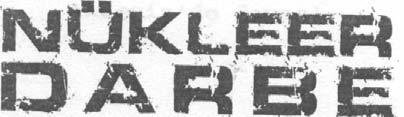
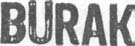
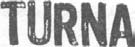

YAYIN HAKLARI
© BURAK TURNA
ALTIN KİTAPLAR YAYINEVİ
VE TİCARET A.Ş. ©
KAPAK
SELÇUK ÖZDOĞAN
BASKI
I. BASIM/KASIM 2006
AKDENİZ YAYINCILIK A.Ş.
Matbaacılar Sitesi No: 83
Bağcılar - İstanbul
BU KİTABIN HER TÜRLÜ YAYIN HAKLARI
Fİ K İ R VE SANAT ESERLERİ YASASI GEREĞİNCE
ALTIN KİTAPLAR YAYINEVİ VE TİCARET A.Ş.'YE AİTTİR.
ISBN 975- 2 1 -0771 -0
ALTIN KİTAPLAR YAYINEVİ
Celâl Ferdi Gökçay Sk. Nebioğlıı Işhanı
www.webturkiyeforum.com
Cağaloğlu - İstanbul
Tel: 0.212.513 63 65/526 80 12
0.212.520 62 46/513 65 18
Faks: 0.212.526 80 11
http://www.altinkitaplar.com.tr
by Ayhan
info@ialtinkituplar. com.tr
Nükleer Darbe
Akdeniz'de Savaş!
1. BÖLÜM
Akdeniz'in üzerinde esen karayel, köpüklü dalgalar yaratıyordu. Ay, gecenin sonsuz boşluğunda denizin üzerine vuruyor, gümüş rengi parıltılarla karanlık suları biraz olsun canlandırıyordu.
İnsana yalnızlık hissi veren derin boşluk, denizin sularıyla buluşur-ken oynaşmakta olan balıkların neşeli danslarına tanıklık ediyordu. Havadaki kesif tuz ve deniz kokusunun eşliğinde Akdeniz'de güzel bir gün hüküm sürüyordu.
Bu güzel Akdeniz gecesinde, sakin su kütlesini yararak ilerleyen Rus yapımı Kilo sınıfı ölümcül bir denizaltı, suyun yüze, ine son çıkışını yapmaktaydı. Ay ışığı siyah gövdesinden yansırken, gi-zemli görüntüsüne başka gizemler katıyordu.
Tehlike gitgide büyüdüğünden, uzun süre su üstüne çıkılma-yacaktı. Dünya savaşı artık Ortadoğu'yu da etkisi altına almıştı.
Büyük güçlerin hesapaşma sahasına dönen Ortadoğu, yaşanacak olan şiddetli bir yıkımın arifesindeydi.
İran denizaltısı Shaheen, su üzerinde yapması gerekenleri çabuk halletmeliydi. Çünkü ortalıkta dört dönen pek çok İsrail ve Burak Turna
Nükleer Darbe
Amerikan savaş gemisi vardı. Üstelik daha da kötüsü, denizaltı av-Savaş odasındaki panellerden gelen ani metalik cızırtı, bir lamak için üretilmiş olan P-3'ler gözlerini kan bürümüş avcılar gibi şeylerin ters gittiğini gösteriyordu. Farzan dikkat kesildi.
Akdeniz'in üzerinde dolaşıyordu.
"Komutanım, radar bağlantısı sağlandı. Akdeniz üzerinde ani Çin-Amerika kapışmasıyla başlayan savaş, Rus ordularının ve yoğun bir hareketlilik belirledik."
Türk kuvvetlerinin desteği ile Avrupa'nın içine mızrak gibi girme-Farzan heyecanlandı. Denizaltının görevi hem hareketlenme-siyle genişlemeye başlamıştı. Ancak Ortadoğu'nun kesin işgali, bü-yi kontrol etmek hem de hayatta kalmaktı. Ancak tek başına bir yük savaşın vazgeçilmez gerekliliklerinden birisiydi. Daha önceki denizaltı için bu son derece zor bir görevdi.
savaşlarda da öyle olmuştu, yine öyle olacaktı. Tabi burada, İran'ın
"Dalışa hazır olun. Hemen bilgi istiyorum. Kimlerle karşı kar-kontrol altına alınması oldukça önemliydi. Amerika liderliğindeki şıyayız. Saldırı ihtimalleri nedir?"
Batı İttifakı, Türk ve Rus kuvvetleri önderliğindeki Doğu İttifa-
"Komutanım, hemen dalışa geçelim. Bir Amerikan denizaltısı kı'nın enerji kaynaklarını kesmek için Ortadoğu'yu tamamen ele tarafından yerimiz belirlendi."
geçirmek zorundaydı. Ancak Doğu İttifakı, hemen hemen her cep-
"Karşılık verme şansımız nedir?"
hede zafer kazanmıştı. Uyuşturucu ve alkolün etkisi, Batı ordula-
"Komutanım altmış üç derece kuzeybatıdalar. Bize doğru gelirında savaşma isteksizliği olarak kendisini göstermişti.
yorlar. Karşılık vermek için konum belirleyecek zamanımız yok."
Batı ordularının kolayca yenilmesi, Doğu tarafında şüpheyle Shaheen'in içinde alarmlar çalmaya başladı. Birazdan vahşi karşılanmıştı. Bunun, kendilerini tuzağa düşürmek için yapılmış
bir Mk-48 torpidosunun peşlerine düşeceğini biliyorlardı. Defalar-bir oyun olabileceği söylentileri alıp yürümüştü. Yine de her şeye ca tatbikat yapmış olsalar da heyecanlarını bastırmakta epeyce rağmen Batı İttifakı'nın Ortadoğu'ya baskısı her geçen gün daha zorlanıyorlardı.
da acımasız hale geliyordu.
Farzan, "torpido suda" alarmını beklemeye başlamıştı. Bedeni Ama hâlâ başaramadılar, diye düşündü denizaltı komutanı öylesine gerilmişti ki neredeyse olduğu yere mıhlanacağını düşü-Farzan. İran tüm saldırılara rağmen hâlâ ayaktaydı. Kendisinin konüyordu. Motorlara tam güç verip dibe doğru inmeye başladılar.
muta ettiği denizaltı da Akdeniz'deki Batı etkisini ortadan kaldır-Birkaç manevra sayesinde büyük ihtimalle Virginia sınıfı denizaltı-mak için görevlendirilmişti. Belki küçük bir katkıydı ama ellerin-yı atlatabileceklerini düşünüyorlardı.
den gelen buydu.
O an askerlerin içine umut eken bir gelişme oldu. Savaş odası Farzan, subaylardan gelen verileri kontrol etti. Her şey nor-yeni bir bilgiyle hareketlenmişti.
mal görünüyordu, aslında bu hiç iyi değildi. Eğer savaş zamanı her
"Komutanım, deniz üzerinde birtakım savaş gemileri belirledik, şey yolunda gidiyorsa daha da dikkatli olmak gerekirdi.
ama bize değil, Amerikan denizaltısma doğru hareket ediyorlar."
Burak Turna
Nükleer Darbe
Farzan heyecanla askerin yanına koştu. Kim olabilirlerdi? Bu-Farzan ne diyeceğini bilemiyordu. Tarihin en büyük deniz sa-nu anlaması uzun sürmedi.
vaşlarından birinin başlangıcına şahit olduğunu o an anlayamamış-
"Suda torpido var. Ama bize değil, Amerikan denizaltısına tı.
doğru ilerliyor."
Herkes gözlerini kapadı, saniyeler içerisinde bir denizaygırı-Amerikan Deniz Filosu'nun yanında İngiliz ve Fransız savaş
nın ölürken çıkardığı sese benzeyen homurtu ve gıcırtı karışımı bir gemilerinden oluşan Birleşmiş Milletler gemileri, Kıbrıs açıkların-sesle doldu içerisi. Savaş odasında alkışlar koptu. Oradakiler her kimse Shaheen 'i yok olmaktan kurtarmıştı.
da yakaladıkları Türk-Rus donanmasına saldırmaya başlamıştı.
"Hemen bize kimin yardım ettiğini öğrenin."
Bundan sonra olanlar, dünya tarihinde yaşanan modern deniz Telsiz operatörleri hararetli bir çalışma içine girdiler.
savaşlarının en kanlı sayfalarını oluşturacaktı.
"Komutanım, bu bir Rus korveti. Türk Donanması ile beraber
Rus Savaş Kruvazörü Petr Velikiy Akdeniz'de devriye geziyorlar."
Farzan heyecan içinde titredi.
Kruvazör komutanı Dimitri Yogliev, Amerikan avcı uçakları-
"Hemen bana Rus korvetini bağlayın..."
nın kendi gemisini ilk hedef olarak seçtiğini anlamıştı. Radar sin-Bağlantı birkaç saniye içerisinde özel komutan paneline akta-yalleri kilitlenme belirtileri göstermese de onların aldığı pozisyon-rılmıştı.
dan bunu çıkarmıştı. Uzun yıllar boyunca Amerikan akademilerin-
"Çok teşekkür ederiz. Hayatımızı kurtardınız..."
de eğitim görüp onlarla yaşadığı için düşünce sistemlerini iyi analiz Cızırtıyla beraber Rus gemisinden cevap geldi.
edebiliyordu.
"Akdeniz çok tehlikeli. Rus Donanması'ndan bazı gemilerle be-
"Hava savunma sistemlerini çalıştırın. Diğer gemilerle bağlan-raberiz. Su üzerinde ve altında çok sayıda Batılı savaş ünitesi var.
tıya geçin, radarların ortak modda çalışmasını sağlayın. Çok büyük Her an büyük bir deniz savaşı patlayabilir. Dikkatli olun ve sürekli bir hava saldırısı olacak... Diğer gemilerle mutlaka aynı anda ce-bizimle bağlantıda kalın. Gerekirse size görev devri yapabiliriz."
vap verebilmeliyiz..."
"Sonuna kadar varız. Ne gerekiyorsa söyleyin, hemen yardıma Komutan sözlerini bitiremeden, radarın belirlediği bir gemi-koşmaya hazırız."
savar füze tehdidi alarmı duyuldu. Başlıyordu işte. İlk füzeyi çabuk
"Tekrar ediyorum, dikkat edin. Batı deniz kuvvetleri ortaya yollamışlardı. Oysa biraz bekleyeceklerini tahmin ediyordu.
çıkıyorlar. Şu anda radarlarımızda uçak filolarını belirledik. Her
"Komutanım bize ateş edildi. Füze yolda."
an şiddetli bir çatışmaya girebiliriz."
"Tam yol ileri, sert dönüş manevrası yapın."
Burak Turna
Nükleer Darbe
Fazla zaman yoktu, belki saniyeler... Emir uygulandığında misti bile. Uçaksavarlar da baraj ateşi ile destek veriyordu. Gemi Petr Velikiy’nin gövdesi gıcırtılar çıkararak sert bir dönüşe başladı.
her yerinden alev kusan bir canavarı andırıyordu uzaktan... Deniz-Hazırlıksız yakalanan askerler etrafa savrulurken geminin silahla-den gelen kesif tuz ve deniz kokusu yerini yavaş yavaş ıslak ve sırının elektronik olarak hızlı hareketler yaptığı görülüyordu.
cak bir barut kokusuna bırakıyordu.
"Hava savunma sistemi aktif... Füzeye kilitlendi."
"Bunlar F-18, yakınlarında bir uçak gemisi olmalı!"
"Radarda bir Fransız firkateyni belirdi. Hayır... daha fazla fir-Komuta merkezinde Rusya ile hararetli konuşmalar yapılıyor-kateyn var. Üçlü kol halinde ilerliyorlar." Gemilerdeki radar sin-du. Savaşın o anına kadar Rus kuvvetleri ile Amerikan kuvvetleri yallerini yanıltma tekniklerinin gelişmiş olması nedeniyle menzilde doğrudan karşı karşıya gelmemişlerdi, ama Akdeniz üzerindeki bile olsa radara yakalanan cismi hemen belirleyemiyorlardı.
Doğu-Batı kavgası sonuçta bunu doğurmuştu.
"Ateş!"
"Hadi oğlum, hadi..." Komutanın kulakları telsizdeydi. Opera-Kruvazörün savunma füzesi ateşlendi. Vahşi bir hızlanmayla törlerden uçaklardan birinin vurulmuş olduğu haberini bekliyordu.
yükseldi ve hemen aşağı doğru bir açı yaptı. Aynı anda dörtlü oto-
"Kahretsin... Kaçırdık efendim!"
matik toplar ateşe başladı. Gökyüzü kıvılcımlarla dolmuştu.
Gözlerini kapattı. Birini bile vursalar büyük bir avantaj elde
"Ateşe devam!" Komutan dürbünü ile ufuk çizgisi üzerinde etmiş olacaklardı.
başka tehdit olup olmadığına bakıyordu.
"Daha çok füze geliyor... Baraj ateşi... yardıma ihtiyacımız var..."
Dimitri Yogliev emri verirken radar kontrollü, atış sistemi Artık düşünecek fazla zaman yoktu. Birer robot gibi hareket ikinci savunma füzesini de ateşlemişti. Ya ilk füzenin hedefi bulma etmeli, geminin bilgisayar sisteminin bir parçası olmalıydılar.
olasılığım düşük hesaplamış olmalıydı ya da yanıltıcı elektronik Büyük deniz savaşının en önde giden gemilerindendiler ve sinyaller alıyordu.
eğer kendi tarafları kayıp verecekse, buna dahil olmaları kaçınıl-
Şiddetli bir patlama sesi ile irkildiler. Komutan hemen etrafını mazdı. Bu ne garip bir duyguydu, vurulacağını bilerek savaşmak.
kolaçan edince geminin iyi durumda olduğunu anladı. Amerikan Ayrılacağını bilerek sevişmek gibiydi belki de... Dimitri gözlerinin uçaklarından atılan gemisavar füzesi imha edilmişti. Dimitri sadece dolmasını engelleyemedi. Duygularını askerlerine belli etmemeliy-bir saniyelik bir hata payı olsaydı, suratında patlayan yüzlerce kiloluk di.
metal okun acısını anlayamadan yok olacağını düşündü.
, "Diğer gemilerden destek istiyoruz... Ağır hava ve deniz saldı-
"Karşı saldırı yapmalıyız. İnisiyatifi onlara bırakamayız. Baskı rısı altındayız. Lütfen tüm silahlarınızla düşman kuvvetlerini geri altında tutmak için sürekli ateş edin..."
püskürtmeye çalışın. Yoksa hemen vurulacağız. Bizi yok etmeye Rus savaş gemisi Sa-N-7 hava savunma füzesini ateşledi.
çalışıyorlar."
Uçaklar, füzenin yirmi beş kilometre olan menziline çoktan gir-
Burak Turna
Nükleer Darbe
Birkaç mil açıklarında bulunan Soveremenny sınıfı dev Rus
"Otuz mil açıkta bulunan İngiliz firkateynleri bize yandan yak-destroyeri Besstrashnny, kendi sınıfındaki on yedinci gemiydi. En laşmaya çalışarak savunma hattında boşluk yaratmayı deniyor.
son sistemleri ile Batı Donanması'nın saldırı stratejisini ve bir son-Sonra ordan girip bitirici vuruşu yapacaklar. Amaçları bu! Onlara raki hareketlerinin ne olacağını belirlemeye çalışıyordu.
saldıracağız!"
Havadan açılan baraj ateşine İngiliz HMS Lancaster firkateyni Telsizlerden gelen seslere gemi bilgisayarlarının aktardığı de destek vermiş ve kendi Harpoon füzelerini Petr Velikiy 'nin elektronik sinyaller de eklenince, insan algısını tamamen kapatabi-
üzerine yollamıştı.
lecek bir ortam oluşuyordu. Yoğun bir uğultu vardı, ter kokusu ile Dimitri Yogliev, bu bizim ve Çin Donanması'nın taktiğiydi, birleşen gürültü, ölüm korkusu ile oluşan gerginliği artırıyordu.
diye düşündü. Hemen karşılığını vermezsek, kısa sürede gemileri-
"İngiliz gemilerini avlayın. İmha edin hepsini!"
mizi kaybedebiliriz.
Gemi, sesten üç kat hızla uçabilen Klub füzeleri ile doluydu.
"Besstrashnny ile bağlantı kurun."
Radar kontağı, füzeleri yönlendirebilecek kesinliğe geldiği anda
"Hattalar komutanım!"
ateş düğmesine basıldı.
"Derhal saldırı pozisyonuna geçin. İngiliz üçlü koluna saldırın.
Tabi bu durumda geminin yeri net bir şekilde karşı donanma-
Çabuk olmazsanız, sizi de kaybedebiliriz."
nın dikkatini de çekecekti. Bu da saldırıya uğramak demekti.
"Anlaşıldı, saldırı manevrasını başlatıyoruz."
Arka arkaya iki gemisavar füzesi Rus gemisinden fırlatıldı ve Sanki iki gemi de kaderlerinin birbirlerine benzeyeceğini his-göz kırpma süresinde gözden kayboldu, geride küçük bir ışıltı bırak-setmiş ve tek vücut gibi hareket etmeye başlamıştı. Soveremenny mıştı sadece... Kısa bir süre sonra da diğer füzeler ateşlenecekti.
sınıfı Rus savaş gemileri büyük savaşlara dayanabilecek gemiler değildiler. Bir an önce füzelerini atıp düşmana saldırmazlarsa, kısa
İngiliz Tip23 Firkateyn HMS Lancaster
sürede yok olup gidebilirlerdi.
Yüzbaşı Alex Bolton gemide başlayan ani koşuşturmacanın bir parçasıydı sadece. Kıç taraftaki pistte duran Lynx helikopterine
Rus Soveremenny Sınıfı Kruvazör Besstrashnny
doğru ilerliyordu. Evde bıraktığı hamile eşini ya da kendisini düşü-Gemi komuta merkezi uzun süredir düşman hattına kilitlendiği necek durumda değildi. Tek düşündüğü üzerlerine gelen füzeden için artık dikkatini kaybetmek üzereydi. Batı orduları şiddetli bir helikopterini nasıl kurtaracağıydı. Her şey çok kısa bir süre içinde elektronik karıştırma savaşı uyguluyordu. Radarlardaki görüntü sık gelişiyordu.
sık gidip geliyordu. Rus savaş gemisi Türk radarları ile bağlantı ku-Bir an bir fısıltı duyduğunu sandı, ama sesin ne olduğunu an-rarak sürekli elindeki bilgileri güncelliyor, radarların sahte bilgilerin laması için bile zamanı yoktu. Tam bu sırada Rus Klub füzesi in-geldiği bir anda kilitlenmiş olma ihtimaline karşı hareket ediyordu.
san algısının üzerinde bir hızla Lancaster'ın üst tarafına beklenme-
Burak Turna
Nükleer Darbe
yen bir şekilde çarptı ve gemiyi neredeyse kafası kopmuş hale ge-
deyse kontrolü yitirmesine neden olmuştu. Tanrım, bu büyük bir tirdi. Tüm sistemler susmuştu. Gece karanlık bir şafağa dönüşür-felaket, diye düşündü Alex Bolton. Yenilmez İngiliz Donanma-ken kendini kaybetmiş alevler gemiden yayılan tek ses ve ışık kaysının üç gemisi birkaç dakika içerisinde paramparça olmuştu.
nağıydı. Arka arkaya patlamalar meydana geliyordu.
Yüzbaşı birkaç millik bir alan içerisinde vurulmuş olan üç İnAlex Bolton üzerine yağan sıcak yağ ve metal parçalarından giliz savaş gemisinin etrafında dolaştı, ama yapabileceği hiçbir şey korunmaya çalışarak helikoptere bindi ve çalıştırdı. Hemen hava-yoktu. Bunlar Rusların en son model öldürücü füzelerine benzi-lanması gerekiyordu. Helikopterdeki füzeler her an zarar görebi-yordu. Gemiler kendi savunma önlemlerini alamadan vurulmuş-lirdi.
lardı.
Pistten birkaç metre havalanmıştı ki, kendine doğru koşan de-Helikopterden bölgedeki diğer İngiliz savaş gemileriyle bağlantı kurmayı denedi. Tüm telsiz hatları yardım istekleriyle doluy-nizciler gördü. Yanık haldeydiler. Birazdan ikincil patlamalar ola-du ve Batı Donanması'nın İngiliz kolu bu kayıplar nedeniyle savaş-cak o zaman gemi ikiye ayrılacaktı.
ma gücünü yitirmiş gibiydi.
Bir an askerleri kurtarıp kurtarmamak arasında bocaladı. Belki helikopteri indirse dört beş kişinin hayatını kurtarabilirdi, ama şu
Yerden On Bin Metre Yüksekte
anda kullandığı araçla kendilerini vuran gemiye saldırabilecek Rus uçak gemisi Kuznetsov'un Kıbrıs ile Türkiye arasında ko-konumdaydı. Duyguları ile değil profesyonel bir savaşçı gibi karar numlandığı Batı Donanması'nın gözünden kaçmıştı. Ancak bunu vermek zorundaydı. İngiliz denizcilerinin çığlıklarını duymazdan çok çabuk öğreneceklerdi. Kuznetsov'dan kalkan Su-33 ve Su-27
gelerek havalandı ve gemiden yüz metre ileriye gitti. Geri dönüp savaş uçakları deniz savaşının yaşanmakta olduğu bölgeye yaklaşı-baktığında gelişmiş İngiliz firkateyninin şiddetli patlamalarla sarsıyordu.
lıp ikiye bölündüğünü gördü. Gemi sulara gömülüyordu. Bu, deniz Radar açıldı geniş bir alandaki düşman hareketliliğini gözle-savaşlarının acıklı klasik görüntülerinden biriydi. Havada asılı kal-melerini sağlamıştı, ama Türk hava radarları da onlara çok daha ma süresi kısıtlıydı, hemen dönüp kendilerini batıran savaş gemisi-geniş bir alanın resmini gönderiyordu. Kısa süre içerisinde teknis-ne saldırmalıydı.
yenler Rus ve Türk operatörleri arasındaki bağlantıları kurmuştu.
Yüzbaşı etraftaki kuvvetlerle bağlantı kurup kesin bilgi almak Hava saldırı grubunun başında General Sergei Oleg vardı.
istiyordu. Ancak birden duyduğu patlamalarla şoka uğradı. Kendi Su-33 içerisinde sürekli kontroller yapıyor ve sert bir hava saldırısı gemisinin vurulmasının üzerinden fazla bir zaman geçmemişti ki, ile Batı Donanması'nı uzaklaştırabileceğini düşünüyordu.
HMS Argyll ve HMS Norfolk'un gövdelerinde dev patlamalarla Yirmi iki savaş uçağı ve iki elektronik karşı tedbir uçağı, biraz sarsıldığım gördü. Şok dalgalan helikopteri de savurmuş ve nere-soma Fransız ve İngiliz savaş gemilerinin üzerinde bitiverdi.
Burak Turna
Nükleer Darbe
General Sergei yeni geliştirilmiş ekranlarda bir şey fark etti.
"Umarım çabuk olurlar..."
Bir hava grubu kendilerine doğru gelmekteydi. Hemen aşağıda bir General Sergei ekranlarda görülen noktaların çoğalmasıyla yerlerde olduğundan emin olduğu Burak sınıfı Türk korveti TCG
endişeye kapılmıştı. En az otuz uçakla karşılaşacaklardı. Ve evet, Barbaros 'la Rus savaş gemilerinin desteğiyle bağlantı kurulmuştu.
başka noktalar... Sayı çoğalıyordu. Amerikan uçak gemisinin tüm
"Barbaros... Burası Rus Kuznetsov hava saldırı grubu. Ben Ge-savaş uçakları başlarına üşüşürse elliye yakın avcı uçağı ile müca-neral Sergei... Yaklaşık olarak, sizin on bin metre üzerinizde uçu-dele etmeleri gerekecekti.
yoruz. Ortalık çok karışık. Ve sanırım savaş daha da kızışacak. Siz-
"Tüm uçaklar. Bundan soması için serbestsiniz. Gerektiğinde den bölgenin daha genel bir resmini istiyorum. Gerekiyorsa Anka-ateş edin."
ra'dan istihbarat isteyin lütfen. Ortalıkta çok fazla elektronik sin-
"Anlaşıldı..."
yal var ve radarların kesintisiz bilgi akışı sağlamasında zorluk yaşı-
"Çok yakın uçuyoruz..."
yoruz."
"Alanı genişletin. Radar kilitlemesine dikkat, onlar bizi gör-
"Anlaşıldı general... Ankara ile gereken bağlantı kurulup Ge-meden ateş etmeliyiz. Düşmanın yoğun saldırısı önlenmeli..."
nelkurmay Harekât Merkezi'nden gerekli bilgileri alacağız. Ama
"Komutanım, kilitlendiler... Bana kilitlendi... Manevra yapıyo-bizim radarlarımızda da karışıklık var. Zaman zaman bağlantı ke-rum..."
siliyor."
Su-33'ün pilotu manevra yapmaya başladı. Sert bir dönüşle
"Evet, biz de yapıyoruz... Elektronik karıştırıcıları açmak zo-sağa yattı ve geri dönmeye başladı. Aşırı G kuvveti nedeniyle zor rundayız, kusura bakmayın. Her an füze yağmuruna maruz kalabi-anlar yaşıyordu.
liriz."
Amerikan F-18'inden gelen Amraam füzesi General Ser-
"Sizi anlıyoruz, ancak biz de bazen savunmasız kalabiliyoruz.
gei 'nin görüşüne girmişti. Umutsuzca makineli topa bastı ve birkaç Geminin elektronik sistemi devre dışı kalıyor ve düzelmesi zaman mermi salladı, uma füze bir anda görünüp kaybolmuştu.
alıyor."
Arkadan gelen patlamayı hissettiler... Uçak isabet almıştı ve
"Anlaşıldı Barbaros. Bize doğru yaklaşan bir saldırı grubu var.
şafak karanlığında kayan bir yıldız gibi Akdeniz'in tuzlu sularına Siz de izlemede kalın ve gerekirse yerden destek sağlayın..."
doğru dönerek düşüyordu. Pilotun atladığına dair bir sinyal alma-
"Size yaklaşan uçakları tespit ettik. Amerikan F-18'leri..."
mışlardı.
"Teşekkürler Barbaros. Bu zorlu bir savaş olacak... Bizi indi-
"Radara karşı önlemlerinizi alın. Ateşe başlayın."
rirlerse siz de gidersiniz..."
General emri verdikten sonra önündeki panellere odaklandı.
"O kadar emin olmayın, Türk Hava Kuvvetleri'ne haber veril-Su-33'e tam güç verdi ve kolu geriye çekerek göğe doğru yükseldi. Türk uçakları kısa süre sonra Akdeniz'de olacak..."
meye başladı. Artık savaş konumuna geçmeleri gerekiyordu. Her-
Burak Turna
Nükleer Darbe
kes yalnız başına avını avlamakla yükümlüydü. Ekranda gördüğü duğunu keşfetmişti. Kimse son hız denize doğru giden bir uçağa bir F-18 diğerlerinden daha uzakta uçuyordu. Onun peşine düştü.
ateş etmek istemiyordu nedense. Bu arada it dalaşma başlamış
İyice yükseldi. On beş bin metreyi geçtikten sonra uçağın burnunu olan birçok uçak, havada daireler çizerek düşmeye başlarken, atla-aşağıya getirerek hedefine doğru ilerlemeye başladı. Uçağa bir kez yan pilotlar yardım sinyalleri yolluyorlardı.
daha güç verdi, bu hep kullandığı bir saldın taktiğiydi. Düşman General Sergei füzelerini dikkatli kullanmak zorundaydı. Ya-kendisine saldırıldığını anladığında çok geç olacaktı. AA-12 füzesini kıtı tükenmeye başlamıştı. Bu Harrier'larla bir dünya rekoru kıra-hedefe kilitlemek için birkaç saniye geçmesi gerekiyordu. O birkaç bilir miyim acaba, diye düşündü. Hepsini vurmanın nasıl olacağını saniye ne kadar da uzun gelmişti. Hedefin belirlendiği sinyalini hayal etti ama sonra birdenbire gerçeğe döndü. Gücü yetse bile alınca bedeni adrenalin saldırısına uğradı ve füzeyi ateşledi. F-18
zamanı yetmeyebilirdi ve bu arada onlar da zaten kaçardı.
güzel bir uçaktı. Güzel bir bebeği avlamayı kim istemezdi ki...
Bir mermiden daha hızlı uçuyordu ve hedefe çabuk ulaşmıştı.
Rus füzesi, havada yalpalayarak uçarken ani manevra yapma-En öndeki Harrier'a kilitlenip füzeyi ateşledi. Bu uçakların Su-33'
ya başlayan F-18'i kurtulamayacağı bir açıya hapsetmişti. Bunu an-ten kurtulması neredeyse imkânsızdı. O nedenle somasını kontrol layan pilot uçağın fırlatma düğmesine bastı. Zengin Amerikalılar, etmeye ihtiyacı yoktu. Sert bir dönüşün ardından tekrar Harrier'a uçaklarını daha kolay feda edebiliyorlardı. Uçak havada patladı-yöneldiğinde, hepsinin kovanlarına eşekarısı girmiş halanları gibi da-
ğında, insani kayıp olmaması nedeniyle basit bir oyun oynamış gibi ğıldıklarını gördü. Ancak bir araya gelip ona saldıracaklardı. Baları-geldi General Sergei'ye. Az önce kaybettiği pilotunun intikamını ları yuvalarını böyle korurdu.
almak üzere, sert yükselme manevrasına başladı. Radar ekranında Göz aynasından ilk uçağı indirdiğini gördü. Şimdi bir başkası düzen kaybolmuştu. Uçaklar it dalaşına giriyordu. Ancak daha ile-vardı. Bu uçakları sevmişti, düşük hızları nedeniyle fazla uzaklaşamı-riden on iki uçaklık bir kolun menzile girdiğini de görmüştü. Bun-yorlardı. İkinci hedefi de baş üstü ekranından, izlemeye aldı, uçağı lar İngiliz uçak gemisi HMS Ark Royal'dan kalkan Harrier'lardı...
ateş etmek için uygun pozisyona getirdi ve makineli topun düğmesine Beyinsiz ve beceriksiz uçaklar, diye düşündü. Havada savaşa-dokundu. Otuz kadar yüksek güçlü patlayıcı top mermisi hedefe cak kıçları yoktu bu uçakların, olsa olsa denizdeki savunması zayıf kilitlenip onun hemen yanında patladılar. Harrier'ın yakıt deposu hedeflere saldırmaya gidiyor olmalıydılar. General Sergei onlara alev almıştı, tamamen havaya uçmadan önce, son bir gayretle pilot bir sürpriz yapmaya karar verdi. Deniz kuvvetleri bunun için ken-uçağı çevirmeye çalışıyordu. Bu sırada General Sergei kendisini iyi disine minnettar kalacaktı.
hissediyordu, böylece ilk kaybettiği pilotunun intikamını almış oldu.
Radar ekranını iyice inceledi. Kendisine en az tehlikeli saldırı General Sergei'nin keskin gözleri başka hedefler arıyordu ve pozisyonunu belirledi. Uçağa yine tam güç verdi ve hızla alçalmaya bir başka Harrier'ı gözüne kestirmişti, uçak denize yakın uçarak başladı. Bu hareketin onu düşmanların peşine takılmasından koruSu-33'ten kurtulmaya çalışıyordu. Beni atlatamayacaksın geri ze-
Burak Turna
Nükleer Darbe
kâh, diye söylendi. Uçağı ona doğru çevirerek hızlandı. Su yüzeyine Telefon başbakana aktarıldığında konuşma çok kısa sürdü.
çok yakındı ve arkasında denizden kalkan su kütlesinin izini bı-Akdeniz Savaşı hakkında tüm yetkililer bilgi sahibiydi ve bir şekil-rakıyordu. Bu uzaktan çok garip görünüyordu. Barbaros korvetin-de uzak kalamayacağımızı hepsi de biliyordu. Bu savaşta Rusya ta-deki Türk askerleri Harrier'ların tek tek vuruluşunu izliyordu.
rafında olmak, Batı'ya tam anlamıyla sırt çevirmek demekti. Baş-
Üçüncü Harrier da generalin mermileri ile parçalanmıştı. Bu sefer bakan, Rus devlet başkanının isteğini dinledikten sonra telefonu doğrudan uçağa çarpan mermiler onu yüzlerce parçaya ayırmıştı.
kapattı. Bakanlara ve askeri danışmanlarına dönerek, "Amerikan Rus pilot Türk korvetine selam geçişi yaptıktan sonra alkışlar ara-hava saldırısını durdurmamızı istiyorlar," dedi.
sında tekrar yükselmeye başladı.
"Bunu yapabilir miyiz efendim?"
Gökyüzündeki hava savaşı Rus uçaklarının vurulup azalma-
"Tabi yaparız, fazlasıyla hem de, ama bu sefer kesin olarak sıyla Amerikalılar lehinde değişmekteydi. Çok hızlı davranılmalıy-Doğu cephesinde olarak algılanırız. Bu kararı vermek zor..."
dı yoksa bütün deniz savaşını kaybedebilirlerdi. General Sergei,
"Sayın başbakanım, bu zor günlerde iyi düşünmeliyiz. Batı ta-
Besstrashnny ile bağlantı kurdu.
rafında yer almak bize şimdiye kadar ne kazandırdı? Bir hiç.
"Derhal, Moskova ile konuşun. Türk Hava Kuvvetleri yardı-Atatürk bize uygar dünyayı hedef gösterdi, Batı'yı değil, şimdiye ma gelmezse, Amerikalılar bizi mahvedecekler. Eğer hava savaşını kadar yanlış yönlendirildik. Artık gerçek yerimiz olan Doğu Birliği kaybedersek savaş gemileri de gidecek."
içinde yer almalı ve bu neyi gerektiriyorsa yapmalıyız..."
"Doğru söylüyorsun... Hemen genelkurmay başkanımızla gö-Gemi komutanı, bunu mantıklı bulmuş olmalıydı ki, Rusya'yı rüşmeliyim..."
aramak için hiç zaman kaybetmedi.
"Gereken hazırlıkları yapalım efendim, Akdeniz bizim denizi-Savaş zamanı diplomasi çok hızlı işlerdi. Sadece tek bir tele-mizdir. Bu saldırı sonrasında daha da büyük gelişmeler olabilir.
fonla bir ülke savaşa girebilirdi.
Kıbrıs'taki kuvvetlerimiz zaten teyakkuz halindeydi, gerekirse ileri Rus devlet başkanı hemen Türk başbakanını aradı.
harekât başlatıp Kıbrıs sorununa bir son verebiliriz."
Ankara'da kurulan daimi kriz merkezi, hükümetin ve askeri
"Bilemiyorum, belki bu yapılmalı ve hatta Oniki Ada sorunu-danışmanların sürekli zaman geçirdiği bir yer haline gelmişti. Her nu da aynı biçimde çözebiliriz. Bir dünya savaşına gireceksek hiç an en az bir bakan nöbet tutuyordu.
olmazsa bu başkaları için değil kendimiz için olmalı."
Rus devlet başkanı aradığında ise başbakan, savunma bakanı
"Bu konuştuklarımız kısa bir süre önce duyulsaydı bizim deli ve dışişleri bakanıyla toplantı halindeydi. Bu kadar yetkilinin bir olduğumuzu düşünürlerdi, ama politikanın bir gün içinde insan arada olması Ruslar açısından büyük bir şanstı.
hayatını nasıl değiştirebileceğini hiç kimse bilmiyor. Medyanın Burak Turna
Nükleer Darbe
kendilerini uyutması ile sanki hayatları hep eskisi gibi gidebilirmiş,
"Komutanım, Rus Besstrashnny bağlantıya geçti. Acilen sizinle kimse sonsuza kadar onlara dokunamazmış zannediyorlar."
konuşmak istiyorlar."
"Evet, karar verdik sanırım. Hemen Rus devlet başkanına da
"Hemen geliyorum, komuta bölümüne aktar oğlum!"
haber verin. Türk ordusu, Batı ordularını püskürtmeyi kabul edi-Emir derhal yerine getirildi.
yor..."
"Ben Yarbay Sami, sizi dinliyorum Besstrashnny..."
"Moskova ile görüştük. Türk ordusu savaşta bizi destekliyor...
Türk Burak Sınıfı Bandırma Korveti
Hemen bize yardım etmeniz gerekiyor, sizden daha yakın bir gemi Yarbay Sami Bey, Ankara'dan gelen kriptolu mesajı okuduk-yok şu anda..."
tan sonra oturduğu yerden ufka baktı ve düşündü. Büyük bir çatış-
"Tam olarak nasıl bir destek istiyorsunuz? Geminin olanakla-manın içine doğru sürükleniyorlardı. Emirler kesindi. Doğu ordurına uygunsa yardım edebilirim..."
"Hava savaşı kötü gidiyor. Boşta kalan Amerikan savaş uçakları, Türk ordusunun desteği olmadan bu savaşı kesinlikle kaybe-ları saldırmaya başladılar. Bir tane füzeyi savuşturabildik. Ama dader ve Akdeniz'den de uzun bir süre geri dönmemek üzere sürü-ha fazlasını yapabileceğimizi sanmıyorum. Hemen radarınızda belürlerdi.
liren Amerikan uçaklarına kilitlenin..."
"Tüm mürettebat savaş konumuna geçsin. Çatışmaya girece-
"Ama bunu yaparsak hedef değişir ve doğrudan bize saldırır-
ğiz. Şimdilik kesin emir almadan ateş etmeyin. Olası hedeflen be-lar. O zaman siz kurtulmuş olursunuz ama biz vuruluruz."
lirleyin. Fransız savaş gemilerinin konumunu belirleyin. Amerika-
"Bir şeyler yapmalıyız Bandırma. Biz Rus savaş uçaklarına kolılarla şimdilik biz değil hava kuvvetlen ilgilenecek."
ordinasyon desteği sağlıyoruz. Birazdan Türk savaş uçakları geldi-Savaş gemisi içinde birdenbire koşuşturma başladı. Herkes ğinde bu koordinasyon işi daha da önemli ve zor hale gelecek.
görev yerlerine giderek savaş sırasında yapılması gereken işleri Eğer vurulursak^u önemli görev tehlikeye girer..."
gözden geçirmeye başlamıştı.
Yarbay Sami Bey bir süre düşündü, Rus doğru söylüyordu. Bek-Yarbay Sami Bey yerinden kalktı ve bütün gemiyi dolaştı.
lenmedik bir şeyle karşılaşmışlardı. Öyle görünüyordu ki, burada Korvetin ilk görevi denizaltı savunması olacaktı, ama bir ihtimal kendi inisiyatifi ön plana çıkacaktı, zira Genelkurmay'ın bu işte yo-100 mm. topuyla ve Exocet'lerle düşman gemilerine saldırması ge-rum yapmasına imkân yok gibiydi. Kararlar anlık alınmalıydı.
rekebilirdi. Modem Exocet füzeleri ile etkin atışlar yapılabilir, bel-
"Tamam Besstrashnny sizin üzerinizden bu yükü alacağız..."
li bir irtifanın altındaysalar uçaklara karşı kullanılabilirlerdi. Ge-Bağlantı kesildikten sonra birkaç saniye düşündü, hemen ha-mide sadece 20 mm.'lik iki tane uçaksavar topu kullanılıyordu.
rekete geçmeliydi. Subayları yanına çağırdı ve kendilerine destek Telsizci er bağırdı.
olabilecek Türk gemilerinin konumlan belirlendi. Beş altı millik Burak Turna
Nükleer Darbe
bir bölgede Türk savaş gemileri bulunuyordu. Tüm radarların ha-
Oscar Austin destroyerinin komutanı Albay Rex Wicca, gelen vadaki Amerikan uçaklarına kilitlenmesi emrini verirken, diğer bilgilerin yoğunluğu karşısında şaşkına dönmüştü. Doğu Donan-Türk savaş gemileriyle de bağlantı kurulmasını istedi.
masının bu kadar iyi savaşacağını düşünmemişlerdi. İngiliz Do-En yakında olan Bodrum korveti Barbaros 'a, destek verecek ve nanması en iyi üç gemisini kaybetmişti. Henüz yarım saat geçme-hava savunmasında kendi radarlarını kullanacaktı. Barbaros firka-mişti ki, Rus füzeleri ateşlenmeye devam etmiş, ama bunlar hedefi teyni de yaklaşan Fransız savaş gemilerine karşı Rus savaş gemile-bulamamışlardı. Bu bulamayacakları anlamına gelmiyordu. Batı riyle birlikte çarpışacaktı.
Donanması psikolojik üstünlüğü ele geçirmek için hemen onlara Yarbay Sami Bey, Barbaros firkateyninin komutanı Albay ağır kayıp verdirmek zorundaydı.
Hakkı Bey'e durumu açıklamak istedi. Ancak Hakkı Bey durumu Ancak ortada ters giden bir şey vardı.
zaten biliyordu. Barbaros firkateyni Bandırma'nın iletişim hatlarını Gelen bilgiler Türk savaş gemilerinin Amerikan savaş uçakla-dinlemişti.
rına kilitlenerek izlemeye aldıklarını gösteriyordu. Bu her an ateş
"Komutanım bu konuşmadan nasıl haberiniz oldu?"
açabilecekleri anlamına geliyordu. Türklerin Ruslara istihbarat
"Kendi kendimize hazırlık yapalım diye bölgedeki iletişim hat-desteği sağladığını ve Avrupa'da onlarla beraber olduklarını biliyorlardı, ama Amerikan ordusuna karşı onların yanında yer ala-larını dinlemeye aldık ve şans eseri sizi duyduk. Ama iyi de oldu.
caklarını düşünmemişlerdi.
Böylece biz de hazırlığımızı yapmış olduk, ama şunu belirteyim saRex Wicca kendi operatörleri ile bir araya geldiğinde herke-vaş çok şiddetlenecek... Büyük kayıplarımız olabilir... Allah'a ema-sin suratının kötü olduğunu gördü. Bu gemi bilinen en gelişmiş ra-net olun..."
dar sistemi olan Aegis ile donatılmıştı. Bundan dolayı elde edilen Konuşma biter bitmez Türk savaş gemilerinin aldığı yeni po-bilgiler ayrıntılı ve fazlaydı.
zisyonun sonuçlan ortaya çıkmaya başlamıştı...
"Yeni bir bilgi mi var?"
Komutan, mürettebatının yüz ifadelerinden neyin ne durum-
Amerikan Arleigh Burke Sınıfı Destroyer, Oscar Austin
da olduğunu anlayabiliyordu.
Oscar Austin, Amerikan Donanmasının bölgedeki komuta
"Komutanım, Türk Hava Kuvvetleri'nde yoğun bir hareket-gemisi konumunda bulunan Harry Truman uçak gemisinden aldığı lenme olduğunu ve saldırı kolları oluşturduğunu radarlarımızdan bilgileri hızla analiz eden yeni geliştirilmiş bir bilgi işleme ünitesi-tespit ettik."
ne sahipti. Aslında Amerikan Donanması'nın ve dünyanın en daRex Wicca şaşkındı, purosundan bir nefes aldı ve ayağa kalktı.
yanıklı, savaş gücü yüksek gemilerindendi.
"Bu saldırı kollarının bize ulaşmasına ne kadar var?"
Harıy Truman uçak gemisi, Rus uçaklarına karşı çatışmayı yö-
"Komutanım, bize doğru gelip gelmediklerini bilmiyoruz, bel-netiyor ve bu bilgileri gerekli gördüğü gemilere hızla iletiyordu.
ki de kendi hava sahalarını korumak istiyorlar, ama sanırım sekse-
Burak Turna
Nükleer Darbe
ne yakın F-16 bu yöne doğru ilerliyor. En kötü ihtimalle hava kuv-
"Bunun burda hiçbir işe yaramadığını gördük. Bakın, yapılma-vetlerimizle karşılaşacaklar."
sı gereken çok zor bir operasyon olabilir, ama bence başka yol yok.
"Bu kabul edilemez! Tanrım, biz burda Türklerle savaşmıyo-Türk radarlarını imha etmeliyiz. Eğer bunu başaramazsak... yani ruz."
radarlarını tamamen kapatmayı... o zaman kurtulan radarlara de-
"Efendim Türklerle şu anda savaşmıyoruz, ama onlara karşı niz piyadeleri helikopterlerle ölümüne saldıracaklar... Eğer onda savaşmak için eğitim aldık ve..."
da başarısız olursak bana Washington'ı bağlayacaksınız ve Yuna-
"Bu seni ilgilendirmez, onlara henüz saldırmadık..."
nistan'ı savaşa sokacağız... Başka yolumuz kalmayabilir."
"Belki de saldıracağımızı düşünüyorlar..."
"Komutanım bu son derece çılgınca bir plan..."
"Ben belkilerle düşünmem... Bu pisliğin içinden nasıl sıyrıla-
"Sen ne dediğinin farkında mısın, bu dünya savaşı be adam.
cağımızı söyleyin. Bu savaşı kazanmak zorundayız ve Türkler bir anda gerçeği gördü, diye bu savaşı kaybetmek istemiyorum anlaşıl-Mantıklı davranmanın zamanı mı?"
dı mı? Hemen ayrıntılı bir savaş planı istiyorum, gerekirse derhal
"Hayır efendim, savaşın bu kadar büyümesine izin verirsek, bu Washington'i arayıp büyük bir saldırı emri çıkartabiliriz."
bölgeyi tamamen kaybederiz. O zaman Türkler bizle bütün güçle-
"Aslında bir şeyler yapılabilir. Rusların uçak gemisi Kuznet-
riyle savaşırlar. Bence burda en mantıklısı hızla Rusları perişan et-
sov, Türk karasularına yakın, diye saldırıdan kurtulmuştu. Ama mek ve Türklerle fazla savaşmadan zafer ilan edip uzaklaşmak...
şimdi bu saldırıyı yapabiliriz. Eğer Kuznetsov batarsa, hepsinin mo-ondan soması Washington'ın işi."
rali bozulacaktır."
"O zaman önce Kuznetsov'un işini bitireceğiz. O Rus aygırını
"Sadece Kuznetsov mu, daha bir sürü Rus destroyeri dolaşıyor paramparça etmenizi istiyorum..."
Akdeniz'de... Denizaltıları saymıyorum bile... Türk Donanması'nın
"Tabi Türk uçakları bunu yapmamızı engellemezse..."
bütün gemileri de tam teyakkuzda ve buraya doğru hareket edecek
"Engellerlerse yeniden düşünürüz..."
durumda... Tanrım! Be adam sen neler zırvalıyorsun, beni bütün Türk hava ve deniz kuvvetleri ile muharebeye mi sokacaksın?"
Türk Burak Sınıfı Bandırma Korveti
"Efendim eğer Türk ordusu bizle savaşmayı düşünüyorsa bunu nasıl engelleyebiliriz?"
Odanın içi yağ ve is kokusuyla dolmuştu. Gemi bütün gücüyle
"Bak seen? Peki o zaman sana şöyle söyleyeyim, o koca kıçını manevra yapıyordu, hareket halinde olmak hedef olmasını zorlaş-kaldır da bir elindeki kuvvetlere bak. Okulda sana öğretilen saçtırabilirdi. Bu nedenle motorları sonuna kadar zorlayarak daire çimalıkları bırak ve gerçek bir asker gibi düşünmeye başla."
ziyorlardı.
"Affedersiniz efendim ben okulumu iyi bir dereceyle bitir-Hava savunma radarı elektronik karıştırıcılar tarafından etki-dim..."
siz hale gelse de Amerikan F-18lerine kilitlenebiliyordu.
Burak Turna
Nükleer Darbe
"Komutanım, Rus savaş uçaklarından yardım çağrıları alıyo-o dev gemiyi kim batırırsa, uçağı özel bir renge boyanacaktı. Tabi ruz."
canlı olarak geriye dönebilirse.
"Evet, artık şov zamanı... Hadi indirelim şu uçakları aşağıya."
Birazdan Türk hava sahasına gireceklerdi ve Kuznetsov'u bek-
"Emredersiniz efendim..."
lemediği bir açıdan yakalayacaklardı. Olabildiğince alçaktan uçu-Bir an sessizlik oldu. Ve bu sessizliği korkunç bir patlama iz-yorlardı. Bu sayede Türkiye'nin güneyindeki dağların kendilerini ledi. Basınç nedeniyle komuta odası çelik levhalara ayrılırken, alev Kııznetsov'un radarlarına karşı korumasını umuyorlardı. Açıkçası ve siyah dumanlardan oluşan plazma, canlı her şeyi alıp görürdü.
Türklerle çatışma konusunu hiç planlanmamışlardı.
Artık her taraf karanlıktı...
"Hedefe yaklaşıyoruz. Konuştuğumuz gibi aniden yükselece-
Bandırma, nereden geldiği belli olmayan bir torpido tarafın-
ğiz ve bir tonluk uydu güdümlü bombaları hedefe doğru yollayaca-dan vurulmuştu.
ğız... Bu onları şaşırtacaktır. Hemen ardından Harpoon'ları üç ayrı koldan ateşleyeceksiniz..."
Türk Barbaros Firkateyni
"Anlaşıldı efendim..."
Dürbünle deniz üzerindeki çatışmayı gözlemleyen askerler, Savaş uçakları iki bin beş yüz metre yükseklikten uçuyordu.
şiddetli patlamayla bağırmaya başladılar. Bunun üzerine Albay Bu süpersonik jetler için hayli düşük bir irtifaydı.
Hakkı Bey hemen bulunduğu yerden dışarı çıktı ve dürbünüyle
"Yükselmeye başlıyoruz."
korkunç bir şekilde ikiye bölünmüş olan Bandırma korvetine baktı.
Uçaklar eşzamanlı olarak yükselmeye başladılar. Hızlarını art-
İçi acıdı, ama yapacak bir şey yoktu. Bu tehlike çanlarının da çaldığı tırmışlardı. Artık Rus uçak gemisinin radarları tarafından algılanıyor anlamına geliyordu.
olmalıydılar.
"Derhal savunma durumuna geçin. Etrafta gizli düşmanlar
"Hedefleme podlarından görebiliyorum. Uçak gemisinin yeri var. Her an bize de saldırabilirler. Çabuk olun."
tespit edildi."
Denizciler savunmaya geçerken bütün radarlardan saldırı sin-Savaşın acımasız anlarından birisiydi. Kuznetsov, Türk karasu-yalleri geliyordu. Barbaros Amerikalıların Kuznetsov'a doğru ger-larının içine doğru seyrettiğinden kendini güvende hissetmişti.
çekleştirdiği akını izleyebiliyordu.
"Gemi hedefte. Uydu güdümlü bombalan yolluyorum."
Uçak iki tane bombayı bırakıp ağır uçaksavar ateşi altında
Yukarıda Bir Yerde, F-18 Filosu
sert bir manevra ile dönmeye başladı. Vurulmaktan kıl payı kurtul-Binbaşı Jack Piton ağarmaya başlayan gökyüzünün kendileri-muştu. Yükselirken peşinden gelen ısı güdümlü hava savunma fü-ni zafere götürmesini diledi. Birazdan Kuznetsov'a ulaşacaklardı ve zelerinden de kurtulmayı başardı.
Nükleer Darbe
Burak Turna
"Yardım isteyin... derhal her yerden yardım isteyin yoksa he-Güdümlü bombalar havada hedefine doğru süzülürken, Kuz-
pimiz burda yanacağız..."
netsov füze olmayan bu tehdidi ortadan kaldırmak için ateş etmeye Bir başka Harpoon füzesi havayı yararak ilerliyordu. Burnu başladı. Bombalardan birisi havada etkisiz hale getirilmişti. Birinci avının kokusunu almış duygusuz bir yaratık gibi sağlam bir nokta-bomba şiddetle patladı, ikincisiyse isabet almasına rağmen uçağın ya kilitlenmişti. Gökyüzüne saçılan mermiler ona rast gelmiyordu.
kıç tarafına çarpıp patladı.
Havada çok fazla tehdit vardı. Avın savunması bastırılmıştı. Onu Telsiz hattı üzerinde bağırışlar yükseldi. İkinci bir uçak uzak yakalamışlardı. Harpoon gemiye yaklaştı.
mesafeden dört tane daha bomba yolladı. Bombalar havadayken
"Türk savaş uçakları nerde kaldı. Besstrashnny, bize yardım et-iki uçak da Harpoon füzelerini bırakmıştı bile. Aynı anda Rus ay-sin, hava savunmasına ihtiyacımız var. Filikaları hazırlayın, çabuk gırına doğru yönelmiş ölümcül metal kütleler vardı havada.
olun."
Rus Amiral Kuznetsov Uçak Gemisi
Füze sesten üç kat hızlıydı. Çıkardığı korkunç hırlamanın ona Gemi komutanı paniğe kapılmıştı. Bir o yana bir bu yana ko-yetişmesine imkân yoktu. Hedefteki gemi de onu duyamayacaktı.
şuyor ve sürekli emirler yağdırıyordu. Savunma konusunda asker-Hedefine bir kez daha baktı. Başka saldırganlarla boğuşan avına lerini yeterince uyarmamış olduğunun bilincindeydi. Bundan duyacır gibiydi. O, savunmanın düştüğü anı yakalamıştı.
duğu vicdan azabıyla daha da çıldırıyordu.
Geminin tam üst tarafına, komuta merkezine doğru uçtu. Be-
"Savaş uçakları derhal havalansın! Yoksa hepsi yerde vurula-yaz bedeni, sert çeliği kâğıt gibi yırttıktan sonra bir miktar içeri caklar..."
girmişti, ki tapası ona patla emrini verdi. Füze emre uydu ve ken-Gemide kalan Rus Su-27'ler zaten havalanmaya çalışıyorlardı, disiyle beraber onlarca denizciyi yok ederken Kuznetsov 'a da bü-ama bu çok tehlikeliydi. Kalktıkları anda peşlerine Amerikan avcıyük bir darbe vurdu. Geminin bir daha kullanılmasına artık imkân larının takılacağı kesin gibiydi.
yoktu. Belki batmayacaktı ama bütün elektronik sistemleri o patla-
Şiddetli bir sarsıntı komutanla beraber yanındaki subayları da mayla beraber imha olmuştu.
yere serdi. Hemen ardından bir ikincisi. Elektrikler kesilmişti ve Büyük bir yangın sarmıştı etrafı. General Sergei Su-33'ii ile hahızla yükselen dumanı camdan görebiliyorlardı. Kuznetsov art arda valanmayı başararak Amerikan uçaklarına saldırmaya başlamıştı.
darbeler alıyordu. Bu darbelere bir süre katlanabilirdi, ama fazla Bu sefer şansı yaver gitmeyecekti. Düşman çok kalabalık ve değil...
hazırlıklıydı. Havalandığı anda peşine takılan iki uçağın füze yağmuru ile vuruldu ve uçaktan atlayarak Akdeniz'in mutluluk veren Sarsıntı geçince hangarlardan gelen bağırtıları duydular. Ko-sularına doğru inmeye başladı.
mutan ayağa kalktı.
Burak Turna
Nükleer Darbe
Kuznetsov vurulmuş bir aygır gibi korkunç sesler çıkararak suda tek gelmeliydi. Yoksa bütün savaş tam anlamıyla bir hezimete dö-sallanıyordu. Gemide art arda patlamalar meydana geldi. Amenüşecekti.
rikalılar kesin emir almışlardı, gemiyi batırmak istiyorlardı ve ona Mürettebatta huzursuzluk başlamıştı. Hava serti gün
yakın füze atışından sonra da istediklerini elde etmişlerdi.
ağarmış ama gökyüzü bulutlarla kaplanmıştı. Eğer şiddetli bir fırtına General Sergei suya doğru sessizce inerken, savaşın onun için başlarsa belki kurtulabilirlerdi, ama orta kuvvette bir firtınada bittiğini düşünüyordu. Elinden geleni yapmıştı ve her Rusun iste-Amerikan gemileri onları avlayacaktı. Zira en gelişmiş radarlara diği gibi Akdeniz'e, sıcak sulara iniyordu.
sahip gemileri dolaşıyordu etrafta. Türk yardımı kesinlikle gerek-liydi.
Rus Soveremenny Sınıfı Kruvazör Besstrashnny
"Barbaros firkateyni hatta!"
"Kuznetsov saldırıya uğradı ve ağır hasar aldı, batıyor!"
"Tamam... Ben Yarbay Oleg... Türk Hava Kuvvetlen neden Bu bilgi gemiye ulaşır ulaşmaz herkesin morali bozuldu. Ve bize yardım etmiyor?"
bundan sonra ne olacağı konuşulmaya başlandı. Batı Donanması'na
"Ben Albay Hakkı, hava kuvvetleri yardıma geliyor, saldırı kolu karşı en büyük kozlarını yitirmişlerdi. Bu arada denizin altı da karış-oluşturuldu, bir dakika içersinde Amerikan uçaklarını vuracaklar..."
mıştı. Bazı çatışmaların olduğu ve her iki taraftan da denizaltı kayıp-Yarbay Oleg duydukları karşısında heyecandan titredi. Bu sıları yaşandığı söylenmişti, ama kimse bunları doğrulayamıyordu.
rada geminin uçaksavarları çalışmaya başlamıştı. Önce birkaç atış
Besstrashnny tekrar savaş pozisyonuna geçmekteydi. Artık ardından da hemen hemen hiç durmadan devam eden atışa gemi-Rus savaş uçaklarını koordine etmesine gerek kalmamıştı. Rus nin toplan da katılınca bir an konuşmaya ara verip etrafına bakın-uçaklarının inecek bir alanı yoktu. Şimdi hepsi de benzinleri bite-ne kadar savaşacak ya düşecek ya da Türk alanlarına inmek zorun-mak zorunda kaldı. Subayların hepsi savaş konumunda dikkatle da kalacaktı.
gelişmeyi izliyorlardı. Bir İngiliz Lynx helikopteri uzak bir mesafede Besstrashnny'nin hedefinde Fransız savaş gemileri vardı. Hızla tehlikeli bir pozisyon almıştı.
ona doğru yaklaşıyorlardı. Donanmaya bitirici vuruşu yapmak için Yarbay Oleg uçaksavarların işlerini bitireceğini düşünürken, geliyorlardı. Acele yeni bir plan yapılmalı ve hemen Türk gemile-gemiden fırlayan bir hava savunma füzesinin sesi duyuldu.
riyle bağlantıya geçilmeliydi.
"Albay, Barbaros 'un da bize destek vermesini istiyorum. Şu Besstrashnny 'nin komutanı Yarbay Oleg, Türk firkateyni Bar-
anda bir helikopter bize füze atmaya çalışıyor. Onu vurabilir misi-
baros ile bağlantı kurulması gerektiğini düşündü. Neden hâlâ niz?"
Türklerden bir yardım gelmiyordu, Türk hava sahasında savaş
"Yarbay bekleyin hemen araştırıyorum..."
uçaklarının oluşturduğu formasyonları görebiliyorlardı. Artık des-Saniyeler sonra...
Burak Turna
Nükleer Darbe.
"Yarbay hava radarlarımız helikopteri algıladı. Hemen ateş
Helikopteri zaman zaman sabitliyor ve Sea Skua füzesini Rus açma emri veriyorum. Sanırım bu vurduğunuz İngiliz gemilerinden gemisinin kalbine saplayabilmek için bir fırsat kolluyordu, ama kalkan bir helikopter. Yakıtı bitmek üzere olabilir. Ve sanırım bir Ruslar, ona bu fırsatı vermemek için silahlarını hiç susturmuyorlar-
çeşit intihar saldırısı ile intikam almayı düşünüyor."
dı.
"Onu hemen vurmamız gerekiyor."
Radar uyarıcısı bir başka geminin ona kilitlendiğini bildirdi.
"Evet, ateşe başlıyoruz."
Bu NATO standartlarında bir radar ve füzeydi. Sea Sparrow, diye Albay Hakkı'nın ateş emri telsiz üzerinden duyulmuştu.
düşündü. Tanrı'nın belaları, beni vurmadan sizden birisini götüreceğim.
Lynx Helikopteri
Büyük bir dalganın ardına geçti, dalga aşağıya indiğinde Alex Yüzbaşı Alex Bolton fazla şansının olmadığını biliyordu. Ya-Bolton'un helikopteri sabitlenmiş ve Sea Skua füzesinin alıcısı, kıtı bitmek üzereydi, en yakındaki İngiliz ya da müttefik gemisi on
Besstrsshntıy'mn gövdesini algılamış ve hazır sinyali vermişti. Alex iki mil uzaktaydı ve aslına bakılırsa teorik olarak bitmiş olan yakı-hiç düşünmeden füzeyi ateşledi. Sea Skua füzesi çılgın bir yarış atı tıyla ancak bir atış yapabilecek durumdaydı.
gibi fırladı helikopterden...
Yüzbaşı alçaktan uçuyordu; dalgalar yükselmiş ve su perdesi Rus Soveremenny Sınıfı Kruvazör Besstrashnny arkasında kalmıştı, ama onu görebiliyordu. Üzerine doğru gelen Yarbay Oleg'ın boğazından hafif bir çığlık koptu. Helikopte-uçaksavar mermilerinden korunmak için sürekli yanlara yatarak rin vurulmadan füzesini ateşleyebildiğim görmüştü. Düşmanın fü-dönüyor ve büyük kalibreli top mermisinden uzak durmaya çalışı-zesi üzerlerine gelirken, telsizden Barbaros firkateyninin helikop-yordu. Bunlar helikopterleri vurmak içi n tasarlanmamış olsa da, tere ateş ettiğini duyuyordu. Neredeyse eşzamanlı bir olay yaşandı.
eğer bir mermisi bile kendisine çarpsa her şey sona ererdi.
Alex'in yolladığı füze gemiye çarpmadan yarım saniye önce Türk-Her şey sona erecekti zaten. Az kaldı, diye düşündü. Ailesini lerin yolladığı füze. Lynx helikopterini havada binlerce parçaya düşünemiyordu, daha şimdiden hayalinde her şey silinmeye başla-
ayırmıştı.
mıştı. Bir yandan da hayalı boyunca kendisine sorup durduğu var-
Yarbay Oleg son saniyelerini tam hatırlayamayacaktı. Buğulu oluşsal sorunların cevabına erişeceği için de mutluydu. Umarını bir görüntüydü. Sea Skua sanki gemiye yaklaştıkça devleşmiş ve yaralanıp yakalanmanı, diye düşündü. Buna izin vermeyi de dü-
çarpmanın oluşturduğu basınç yeterli gelmişti. Patlamayla beraber şünmüyordu zaten. Bu savaşın içerisinde adı anılmayacak bir ista-geminin bütün hayati organları hasar görmüş, gövde kırılmış ve tistik rakamı olacağını bilse de umurunda değildi. Gemide kaybet-hızla su almaya başlamıştı. Yangını söndürmeye çalışmanın da bir tiği arkadaşları için yapacaktı bunu.
anlamı yoktu, Bu kesinlikle ölüm vuruşuydu.
Burak Turna
Nükleer Darbe
Türk Burak Sınıfı TCG Bodrum Korveti
Ancak, Georges Leygues, havalanan helikopteri tespit etmişti Yarbay Deniz, Akdeniz'in her yerinden göğe yükselen du-ve Crotale füzelerini helikoptere yolladı. Sat timini taşıyan heli-manlara ve onların kaynağını oluşturan savaş sahnesine baktı.
kopter havada vurularak denizin dörtbir yanına dağıldı.
Hemen harekete geçmek gerektiğini düşündü. Hızla... Emir-Yarbay Deniz yaralı olmasına rağmen henüz batmamış olan ler yağdırarak kendisi de savaş panellerinin başına geçti. Hedefte korvetin ön tarafındaki uçaksavar silahın başına geçti. Askerler ge-Fransız savaş gemileri vardı.
miyi terk ederken o inatla havaya ve gemilere ateş ediyordu. As-Aynı anda Barbaros ile bağlantı halindeydi ve onların hava kerleri onu silahın başından kaldırmak istiyordu, ama gemiyi terk saldırısına uğradığını, üstelik Amerikan Oscar Austin destroyerinin etmeye niyeti yoktu.
takibinde olduğunu duyabiliyorlardı. Gemi kendini koruyabilecek Askerlerin bazıları onun yanında kalıp tüfekleriyle onu koru-durumdaydı, ama yaklaşan Fransız gemileri onun işini bitirebilir-mak istediler. Bir savaş uçağı alçaktan uçarak geminin birkaç mil lerdi. İkili kol halinde gelen Fransız firkateynleri Georges Leygues açığından geçti. Hemen ardından makineli topu ile Yarbay Deniz ve Dupleix, tam güç savaş alanına girmişti ve hemen ortalığı temizlemek istiyor gibiydiler...
ve yanındaki askerlere saldırdı. Denizciler art arda şehit olmuştu.
Bodrum korveti onları yakalamıştı. Ancak karşılıklı olarak bir-
Çarpışma gittikçe şiddetlenmekteydi. Birkaç saat içinde olup birlerinin farkındaydılar. İkisi de benzer silahlara sahip gemilerdi.
bitenler büyük bir deniz savaşının başlangıcıydı.
Yarbay Deniz, Dupleix firkateyninin daha açık bir hedef oldu-
Barbaros firkateyni Georges Leygues 'e yolladığı füzenin hedefi ğunu fark etti ve hemen onunla angajmana girilmesini emretti.
Bodrum 'un Exocet füzeleri hedeflerine kilitlendi ve fırlatıldı. Bun-
ıskalaması ya da savunma tarafından düşürülmesinden sonra Ameri-dan sonra olanlar saniyeler içerisinde gerçekleşti.
kan Oscar Austin 'den atılan füzelere hedef oldu. Albay Hakkı Bey Exocet denize çok yakın uçarak hedefine giderken Georges komuta merkezine çarpan füze ile beraber şehit olurken, Barba-Leygues de Bodrum korvetini belirleyerek ateş açtı. Aynı anda ha-
ros 'un batışı fitili ateşleyen olay olmuştu.
vada iki Exocet uçuyordu.
Havada saldırı kolu oluşturan Türk F-16'ları Oscar Austin'e Füzelerden ikisi de hedeflerim buldular. Dupleix firkateyni saldırdılar.
tam göbekten vurulmuş ve ikiye bölünmüştü.
Oscar Austin dayanıklı bir gemiydi. F-16'larm yolladığı füzelerin Bodrum korveti kıçtan vurulmuştu ve geri yatıyordu. Gemide bir kısmından kurtulmayı başarmıştı. Ön tarafa çok yakın düşen bir büyük bir yangın çıkmıştı. Barbaros firkateynindeki sat komando bombanın yarattığı hafif tahribat dışında kötü sayılmazdı.
timleri, Yarbay Deniz'in ölmediğini duyunca onu kurtarmak ve Ancak o da karşı ateş açtı. Elektronik karıştırıcılarla F-16'ları yangına müdahaleye destek olmak için helikopterle havalandılar.
kör etmeyi denedi ama bunu başaramadı.
Burak Turna
Nükleer Darbe
Savunma ateşi ile iki F-16 havada vurularak düşmeye başladı.
Gerçekten de, Georges Leygues, savaşın şoku ile denizaltına Filo komutanı çok uzaklardan yolladığı bir roketle gemiyi üst tara-bakmayı unutmuştu. Bunda haksız da sayılmazdı. Görüldüğü kafından vurdu. Hemen arkasından lazer güdümlü bir bomba, son darıyla bir Türk korveti ile kapışıyordu. Sürekli olarak ateşlenen derece riskli bir taktik deneyerek Oscar Austin 7 tam göbeğinden topu ve otomatik silahlarının çıkardığı duman net biçimde görülü-vurdu.
yordu.
Güdümlü füze destroyeri artık bir şey yok edecek durumda
"Onu vuracağız... Çabuk olun torpidoları hazırlayın..."
değildi. Denizciler gemiyi terk etmeye çalışırken o kızgın alevler Emirleri hemen yerine getirildi. Shaheen şimdi ilk avını avla-içerisinde yanıyordu.
mak üzereydi. Ama çabuk olup arkasından başkasını getirmeliydi.
Farzan periskopu rahatlıkla kullanabiliyordu, kimse onu göre-
İran Kilo Sınıfı Denizaltı
bilecek durumda değildi. Savaşın en sıcak anıydı. Türk korvetinin Farzan tüm bu olanlar karşısında ne yapması gerektiğine kade Georges Leygues tarafından bir Exocet ile vurulduğuna şahit ol-rar vermeye çalışıyordu. Aslına bakılırsa hiç beklemediği şiddette du. Korvet yanarken Türk askerleri kendilerini dalgalı ve soğuk büyük bir deniz savaşının ortasında kalmıştı. Her an tespit edilip suya bırakıyorlardı.
yok edilebilirdi. Vurulan gemi sayısı çok kısa bir süre içerisinde Ufuk çizgisi üzerinde bulundukları yöne yaklaşan bir Ameri-ona yaklaşmıştı. Denize düşen helikopterleri ve uçakları saymıyor-kan güdümlü füze destroyeri, Farzan'ın iştahım kabartmıştı.
du bile.
"Onu da istiyorum... Çabuk şu Fransızı yok edin... Çabuk..."
Ben de bir şeyler yapmalıyım, diye düşündü. Shaheen denizal-
"Emredersiniz efendim, torpidolar ateşe hazır... Ateş!!!"
tısı ölüm sessizliğinde yatıyor ve sadece pasif dinleme yapıyordu.
Dizel denizaltının kolay yakalanmayacağını biliyordu ama yanlış-
İki torpido art arda denize bırakıldı. Farzan sanki kendi elle lıkla vurulma ihtimali yüksekti.
riyle gemiye saldırıyormuş gibi kasılmıştı.
"Periskop yukarı!"
Zaman geçmek bilmiyordu...
Elektronik gözetleme yapabilen periskop yavaşça yukarı çıktı.
Ve birden büyük bir patlama, ardından ikincisi geldi... Geor-
Farzan periskoptan yaşanan felaketi tüm ayrıntısıyla gördü. Dalgalı ges Leygues neye uğradığına şaşırmıştı. Personel, Türk korvetini denizin üzerinde, sis ve su perdelerinin arkasında zaman zaman batırmanın keyfine varmak üzereyken geminin ikiye yarıldığma şayanıp sönen ışıklar, bir deniz fenerini değil, patlayan bombalan hit olmuştu. Gemi batmaya fırsat bulamadan öfkeli bir Türk Fgösteriyordu.
16'sı makineli topu ile Leygues'in üzerinden geçti ve denize atlamaya
"Bu bir Fransız gemisi..." Farzan heyecanla bağırdı.
çalışan Fransız denizcileri biçti.
Burak Turna
Nükleer Darbe
Farzan çıldırmış gibiydi, olduğu yerde zıplıyordu. Türk savaş
lahlı teknenin amacım ve geldiği ülkeyi bilmiyordu, ama yakındaki gemilerinin onun orada olduğunu bilmesinden çok mutlu olacaktı.
Yunan Adaları'nın birisinden gelmiş olabileceğini düşünüyordu.
Hemen periskopu döndürdü. Gerçek avına bakmak istiyordu.
Rus kruvazörü Amiral Lohov, Yavuz firkateyninin hemen gü-
Şişman, etli bir gemiydi bu. DDG 75 bordo numaralı Donald Cook neydoğusunda yer alıyordu. Yavuz firkateyni, Yunan Adaları'nda isimli güdümlü mermi destroyeri, az önce vurulan Oscar Austin 'in yerleşmiş olan radarların tamamen Amerikan gemileri tarafından kopyası sayılırdı. Öfkeyle al.es açarak yaklaşıyordu. Farzan, gemi-kullanıldığını Ankara'ya iletti. Rus kruvazör de aynı bilgiyi Mosko-den yükselen füzelerin alevli huzmelerini görebiliyordu ve o huz-va'ya bildirmişti. Ne yapılacağı merakla bekleniyordu.
melerin nereye gittiğini merak etti. Bunlar sadece gemisavar füze-Zaman daralıyordu. Donald Cook 'un attığı Tomahawk füzeleri ler değildi, Donald Cook güverteden Tomahawk ateşi açıyordu.
bazı havaalanlarında hasar meydana getirmiş ve bir tane hava Farzan bu füzelerin nereye kilitlenmiş olabileceğini düşündü. Faz-radarını imha etmişti. Geçici olarak radar desteği sağlanamaya-la seçenek yoktu, tek mantıklı hedef, Türk radarları ve askeri üsleri caktı. Yunan radarları sayesinde Amerikan gemileri üstünlük ka-olabilirdi. Amerikalılar Türklerle ve Ruslarla aynı zamanda çar-zanıyordu.
pışmak zorundaydı.
Ankara, Moskova ile yaptığı görüşmelerden dolayı bir karara
"O Amerikan gemisini vurmalıyız... Çabuk olun..."
varmıştı. Rus savaş gemileri, Yunan Adaları'ndaki radarları vura-Torpidolar hazırlandı ama dikkatli olmalıydılar. Bu atışlar on-caktı.
ların sonunu getirebilirdi.
Bu haber üzerine gereken koordinasyon sağlandı. Bir dakika
"Biraz bekleyin." Donald Cook'un manevraları dengesizdi, içerisinde, Amiral Lobov, SS-N-12 süpersonik seyir füzelerini Yu-onu ıskalamak istemiyordu Farzan.
nan radarlarına yolluyordu. Gemiden arka arkaya fırlatılan silah-
"Biraz daha yaklaşmalıyız."
lar, çok kısa bir süre sonra belirlenen noktalardaki radar tesislerini
"Komutanım, yaklaşırsak, bizi fark edecektir."
kullanılmaz hale getirmişti.
"O zaman bekleyin, Türk savaş gemileri onun dikkatini dağıt-
Donald Cook'un yeni bir görevi vardı. Türk ve Rus gemileri tığı anda biz ek onu indireceğiz."
ile çatışmaya girmek. Tabi Amerikan uçaklarının desteğiyle...
"Başüstüne komutanım...'
İran Kilo Sınıfı Denizaltı
Türk Yavuz Firkateyni
Farzan, Donald Cook'ıı izliyordu. Evet, sonunda olmuştu işte.
Yarbay Mehmet, Yavuz'u şimdiye kadar hem çatışmanın uza-Amerikan destroyeri, bir Türk firkateynine saldırmaya başlamıştı.
ğında tutmuş hem de bir hızlı saldırı botunu batırmıştı. O küçük siTürk gemisinden atılan füze Cook tarafından bertaraf edilmişti.
Burak Turna
Nükleer Darbe
Karşı saldırı yapıyordu şimdi de... Ancak Amerikan gemisi saldırı-Pek çok gemi. uçak, denizaltı ve helikopter içindeki askerlerle sını sürdürürken Türk firkateyni gökyüzünden gelen bir ateş par-beraber suya gömülmüştü. Milyarlarca dolarlık silah yok olmuştu.
çası ile patladı. İkincil ve üçüncül patlamalarla cephane deposu Ancak silah üreticileri daha da iştahlı bir biçimde yenilerini üret-
havaya uçmuş, Yavuz firkateyni de sulara gömülmeye başlamıştı.
meye koyulmuşlardı bile. Savaşı Batı Donanması kazanmış gibi gö-
Hemen arkasından Rus kruvazörünün Amerikan gemisine rünse de. Amerikan gemileri hızla bölgeden uzaklaşıyordıı. Bu sa-
ateş ettiğini ve ona hasar verdiğini gördüler. Amerikan savaş uçak-
vaşın devamında yenilmelerinin kaçınılmaz olduğunu fark etmiş-ları hasar verilen Donald Cook'u kurtarmak için Rus gemisine lerdi.
odaklanmışlardı. Birkaç dakika sonra Amiral Lobov da alevler içe-
ı isinde kalmıştı.
Farzan zamanın geldiğini anladığından, ateş emri verdi. İran denizaltısından çıkan torpidolar alevler içerisindeki Donald Cook'a çarptı. İranlılar havaya sıçramıştı. Dev Amerikan gemisini ba-tacağına emin oldukları biçimde vurmuşlardı.
"Komutanım, yerimiz belirlendi... Amerikan denizaltıları yerimizi belirlediler..."
"Tam yol ileri, suya dalın, dibe daim..."
Denizaltısavar S-60 Blackhawk'ın rotorlarının sesini duyduklarında sırtlarından soğuk terler boşaldı. Galiba biz de gidiyoruz, diye düşündü Farzan... Bunun bir önemi yoktu, şehit olacağını dü-
şünüp mutlu bir gülümseme yayıldı yüzüne.
"Ateş ettiler... torpidolar suda..."
Kimse sesini çıkarmadı. Sadece oldukları yere sıkı sıkıya tutu-nup beklediler. Bir torpido gelip onlara çarptı ve geminin iskele-tinden gelen çatırdama sesi duyuldu. Hemen arkasından gemi karanlığa büründü ve son hızla içine su dolmaya başladı.
Akdeniz'de patlamalar bir gün boyunca sürecekti. Akşama doğru hava kararırken fırtına bulutları toparlanıyordu.
Nükleer Darbe
Çin ordusunun uzun yıllar boyunca özenle ve çok gizli bir harekâtla eğittiği bu askerlerin tek bir amacı vardı. Dünyayı kasıp ka-vurmaya başlayan büyük savaşın son darbesini Çin'in vurmasını sağlamak.
Hu Jintao onlarla gurur duyuyordu. Çin ulusunun uzun süren yolculuğunda, belki de kilometre taşlarından biri olacaklardı. Biraz sonra vereceği emir üzerine, korkunç kum fırtınası içinde dimdik duran seksen bine yakın Çin komandosu, onlarca kiloluk teçhizatları ile Amerikan anakarasına saldıracaktı. Bu saldın sonucun-
2. BÖLÜM
da Amerikan savunma sisteminin tamamen çökertilmesi ve Batı Amerika topraklarının büyük kısmının savunmasız kılınarak, ikinci dalga Çin saldırıları ile tamamen ele geçirilmesi düşünülüyordu.
Çin Devlet Başkanı Hu Jintao içinde bulundukları barakanın Bu bir kere gerçekleştikten sonra, Doğu topraklarında sıkışan tahta zemininde yavaş ve gıcırtılı adımlarla ilerleyerek kapının Amerikan ordusu ile bir müzakere yapabilirler ve Japonya'nın önüne kadar geldi. Kapının hemen dışında Çinli subaylar, tam teç-düştüğü duruma düşmek zorunda kalmadan, eşit şartlarda bir hizatlı olarak tek sıra halinde büyük komutanlarının çıkmasını dünya gücü olabilirlerdi.
bekliyordu.
Hu kendisine verilen mikrofonu aldı. Kum fırtınası yavaşla-
Şiddetli rüzgârın savurduğu toz bulutlarının arasından fark mıştı biraz. Askerler ona doğru bakıyordu. Hu, bu bakışlara sev-edilen sıralanmış insan siluetleri o anda belli belirsiz bir karaltıdan giyle karşılık verdi. Onlarla olmayı ne kadar da isterdim, diye dü-başka bir şey değildi.
şündü.
Hu barakanın dışına çıktı. Etrafındaki subaylar hemen onun Boğazını temizledi ve askerlerin gözlerinin içine bakarak ko-
önüne bir şemsiye tutarak çöl kumu ile karışmış toz fırtınasından nuşmaya başladı.
korumaya çalıştılar, ama Hu Jintao onları elinin tersi ile iterek
"Sizler gururlu ve büyük bir ordunun öncülerisiniz. Yıllar sü-kum fırtınasına dönüşmeye başlayan havada, sıra halindeki askerlere doğru yürümeye başladı. Dik durmaya çalışıyor ve gözlerini ren mücadelemiz beklediğimiz anla yüzleşti. Batı'nın büyük baskısı kısarak mümkün olduğunca kendisini fırtınadan sakınmaya çalışı-sonucu Doğu ülkeleri olarak bir araya geldik ve bu baskıcı saldırı-yordu. Biraz sonra başlayacak olan operasyon bu askerler için ya karşı koyduk. Ve onlar da sert bir karşılık verdiler. Ancak sizler, ölüm demekti. Onların bu cesareti karşısında kendi canının bir gururlu Çin ordusu olarak donanmalarını P a s i f i k Okyanusu'na önemi olmamalıydı.
gömmeyi başardınız. Ancak, henüz her şey bitmedi. Düşman hâlâ Burak Turna
Nükleer Darbe
çok güçlü ve yırtıcı. Düşman toprağına girmezsek, başarılı olma bul edemezdi. Çinliler de Türkler gibi, Ruslar gibi onurlu bir mil-
şansımız yok. Sizler bunu yapacaksınız. Acımasızca ve korkusuzca letli. Derm bir kültüre sahiptiler. Böylesi bir kültür birikimine sa-saldıracak, anlık darbeyi vuracaksınız. Milyonlarca Çin askeri ar-hip olmaları, diğerlerinin kendilerinden istedikleri şeytani güç elde kanızdan Amerikan anakarasına taşınacak ve sonra da Avrupa etme planlarının bir parçası olmalarını engelliyordu.
topraklanın çevirecek. İşte o zaman binlerce yılın Doğu kültürü.
Çin ordusu, Amerika'yı işgal etme planını uygulamaya koysığ kültürlerin şımarık saldırısına sert bir tokat vurmuş olacak."
muştu. Bunu, geriye dönüşü olmayan, dünyayı yok oluşun eşiğine Boğazına dolan toz zerrecikleri nedeniyle öksürmeye başla-getirecek, ama gerekli bir plan olarak görüyorlardı. Yeraltı treni-mıştı. Konmaları hemen yanına gelip mataralarından su verdiler.
n i n içindeki özel yapım vagonda pek çok elektronik cihaz vardı.
O zaman Hu'nun gözlerindeki yaşlan gördüler. Aralarında sessiz Sürekli olarak saldırıyla ilgili gidişatı öğrenebileceklerdi. Çin, bir anlaşma yapılmış gibiydi. Kimseye söylenmeyecekti bu.
Amerikan iletişim sistemleriyle ilgili teknolojiyi ülkesine getirebil-
"Ve şimdi sizden gidip bu dünya savaşını sona erdirecek büyük, mek için uzun uğraşlar vermiş ve süper casusları sayesinde bunu zorlu ve yorucu darbeyi indirmenizi istiyorum,"
başarabilmişti. Artık bütün çabaların sonuçlarını görme zamanıydı.
Hu ellerini kaldırdı ve askerleri selamladı. Askerler önce ol-Aslında büyük Çin saldırısı çok önceden başlamıştı, ama bu, dukları yerde koşar adını zıplamaya başladılar. Geniş alanı kor-tar ihin belki de en başarılı giz perdesinin ardında gerçekleşmişti.
kunç bir uğultu kaplamıştı. Askerler gölge savaşçıları gibi kendile-
Çin'den Amerika'ya sadece bu operasyon nedeniyle yollanan insan rini taşıma platformlarına götürecek olan araçlara koşuyorlardı, sayısı savaş başlamadan önce kırk beş bini bulmuştu. Şimdi ise, bu Hu gururla seyretti onları. Bir emri ile on binlerce erkek ölmek dev milis gücü, silahlarını kuşanmış ve Amerikan Anayurt Güven-
üzere yola çıkmıştı.
liği Bakanlığının tüm çalışmalarının arasından sıyrılarak saldırıyı başlatacak komando ordusu için pek çok iniş noktasıyla güvenli Korumaları Hu'nun yanma geldiler. Bir an önce operasyonun bölge oluşturmuştu! Bu birlikler birleştiğinde şehir içi milislerinin yönetileceği dev yeraltı sığmağına gidecek olan yeraltı trenine gitmek saldırıları başlayacak ve Amerika'nın batı kıyılarındaki şehirler bir zorundaydılar. Üçüncü Dünya Savaşı'nın şimdiki aşaması anda sonsuz bir kaosa boğulacaktı.
korkunç olacaktı. Artık sınırların sona erdiği an gelmişti, bütün si-Kanlı Düello, başlamak üzereydi.
lahlar ateşlenebilirdı. Hu'nun gözlerinde yüz milyonların ölümü canlanıyordu. Neden bu ana geldiklerini sorguladı. Şeytani insanların neden ölümü bu kadar sevdiklerine anlam verememişti. Kendisine de teklif yapılmıştı. Onlara katılmalarını ve dünyayı beraber yönetmelerini istemişlerdi. Bunu yapamazdı. Çin kültürü bunu ka-
Burak Turna
Nükleer Darbe
mıştı. Bu değişiklik hoşuna gitmişti. Hazır uyanmışken çıkıp hava almak ve etrafa bakmak istedi. Eline ne geçirdiyse onu giyip dışarı Amerika ' nın İşgali!
çıktı. Geniş caddeleri olan yan harap evlerin sıralandığı mahallede bu saatte kimse dışarıda olmazdı.
Carlos dışarı çıktı ve boş kaldırımlarda yürümeye başladı. Yürürken çıkardığı ses mahallede yankılanıyordu. Havada bir gariplik vardı. Sokaklar düşündüğü gibi boş değildi. Yüzüne oturmuş anlamsız bir ifadeyle yürümeye devam etti. Bir süre sonra geniş bir yol ağzına geldiğinde durdu. Birkaç blok ötede köşebaşında birileri vardı. Yaklaşık on beş kişilik bir grup hızlı hareketlerle, bir evden 3. BÖLÜM
dışarı çıkarttıkları kutuları arabaya yüklüyorlardı. Pek hırsızlığa benzemiyordu bu. Carlos, adamları da tanımadığını düşündü.
Belki, belki bir tanesini tanıyordu. Evet, içlerinden birisi mahalle-Los Angeles'ın arka sokaklarında hayat her zamanki gibiydi.
lerinde oturan sessiz bir Çinli bakkaldı. Ancak yanındakileri kesin-Suçlular, savaş nedeniyle iç güvenliğe ilginin kaybolmasıyla hayat-likle tanımadığından emindi.
larının en aktif dönemini yaşıyorlardı.
Şimdi onlar da durmuş Carlos'a bakıyorlardı. Vahşi, nasıl Carlos mahallesindeki İspanyol çeteleri içinde en belalısı olan Angel's Nest'i yönetiyordu. Bölgeye gelen polislerin bile bulaş-davranacağını bilemedi. Bu mahallenin en belalı adamıydı o, ama maktan korktuğu, şiddet ve cinsellik düşkünü bir manyaktı.
şu an içindeki his hiç de bildikleri gibi davranmaması gerektiğini Sabah uyanır uyanmaz yanındaki kadına baktı. İsmini hatırlasöylüyordu. Bir an hisleri ve imajı arasında bocalayarak birkaç madığını düşünüp kızdı kendine. Yaşlanıyorum, insanların isimle-adım attı. İlerideki sokağın köşesindeki adamlar da dönüp ona rini hatırlayamıyorum, diye söylendi. Sonra durdu birden. Aslında doğru yürümeye başladılar. Garip görünüyorlardı. Hepsi de Çin-kızın adını bile bilmiyordu. Evet, ona adını hiç sormamıştı ve ora-liydi.
da neden yattığını dahi bilmiyordu. Gece verilen partide aldığı Carlos, adamların bazılarının sırtında bir piyade tüfeği oldu-uyuşturucunun etkisiyle beyni sünger gibi olmuştu.
ğunu gördüğü anda dondu kaldı. Bu sıradan bir çete değildi. Hiç Kadını dürterek uyandırdı, ama en az kendisi kadar uçmuş
de öyle davranmıyorlardı. Bir anda kalbi hızla çarpmaya başladı.
durumdaki kadın yerinden bile kımıldamadı.
İçgüdüleri ona ordan kaçması gerektiğini söylüyordu. Bir an durdu Bana ha, Vahşi Carlos'a karşı gelmek. Durdu ve gülümsedi.
ve sonra içgüdülerine uydu. Dönüp son hızla koşarak kaçmaya Doğrusu uzun bir zamandır ona böyle hiç yokmuş gibi davranılma-başladı. Hemen eve gidecek ve silahını alarak geri dönecekti ya da Burak Turna
Nükleer Darbe
belki de dönmezdi. Adamlarını arar ve en azından yirmi kişinin Kadın, ona küçümser gibi baktı.
toplanmasını beklerdi. Ondan sonra silahlı olarak gelir ve bu
"İstersen bunun cevabı bende saklı kalsın, çünkü bütün ününü adamların işini bitirirlerdi.
bir anda yerin dibine batıracak durumdasın."
Carlos sokağı döndüğü anda rahatladı. Ardından ateş ede-Kadın gülerek kapıyı hızla kapattı. Carlos şaşırdı. Bu kadın mezlerdi artık, ama zaten adamlar da böyle bir şey yapacak gibi hasta olmalı, diye düşündü. Camın kenarına gidip kadına baktı.
görünmüyorlardı. Vahşi, kahkaha seslerini duymuştu. Bunun inti-Birden gözü yolun ilerisinden hızla kendi tarafına doğru gelmekte kamını alacağına dair yemin etti.
olan araca takıldı. Eski bir kamyonetti ve üzerinde birileri vardı.
Eve geldiğinde kadının kalktığını ve söylenerek evin içinde bir Ne saçmalık sabah sabah, diye düşünürken araç hızla evinin önünden geçti. Bu az önce gördüğü adamlara benzer giyinmiş silahlı bir şeyler aradığını gördü. Kadın birden Carlos'un korkmuş halini gö-başka Çinli gruptu. Kamyonun arkasında bir de makineli tüfek ol-rünce şaşırdı ve sustu.
duğunu görmüştü. Tanrım, bu kadarı da fazla, diye içinden geçirdi.
"Hemen giyin. Burdan defolup gidiyorsun."
Bir anda mahallesi Çinli bir çete tarafından istila mı edilmişti ne?
"Neden Carlos, ne oluyor?"
Kulağına çalınan siren sesi ile rahatladı. Bunu hayal bile ede-
"Tanrı'nın belası kadın, hemen defol git. İşim var."
mezdi ama polis sirenlerinin sesini duymak içini rahatlatmıştı.
Carlos aceleyle telefonu açtı ve karşısındaki telefonu açana Şimdi ne yapacaksınız bakalım sizi kısa boylu vahşiler, diye düşün-kadar defalarca çaldırdı. Karşısına çıkan adam uykulu ve sinirliydi.
dü. Bir polis aracı son hız evinin önünden geçip gitti.
"Miquel hemen kaldır o kıçını ve bir an önce buraya gel. Tan-Carlos bir anda keyiflenmişti. Birazdan ortalık şenlenecek ve rı'nın belası bir Çinli çete mahallede terör estiriyor. Hemen adam-onu kovalayan adamlar hapsi boylayacaktı. Evden dışarı çıkıp polis ları da al ve silahlarınızla buraya gelin. Henüz neler döndüğünü arabasının arkasından baktı. Polis arabası sokağı döndükten sonra bilmiyorum, ama anlamadığım bir şeyler oluyor."
birkaç el silah sesi duyuldu. Siren sesi şimdi tekrar yaklaşmaya Miquel'in homurdanmalarını dinlemeden telefonu yüzüne kabaşlamıştı. Sokağın köşesinden fırlayan polis arabası geldiği yöne pattı. Carlos nedense içindeki kötü hissi atamamıştı. Gidip oraya doğru geri kaçıyordu.
adamların ne yaptığına bakmak istiyordu. Miquel ve adamlarının Carlos gözlerine inanamıyordu, polislerin ardında birkaç ona gelmeleri on beş dakika sürerdi. Sadece birkaç blok ötedeydi-kamyon silahlı adam vardı. Carlos da polis arabasını görünce eve ler. Yerinde duramıyor, sürekli olarak odanın içinde dolanıyordu.
daldı. Miquel gelirse ne olacaktı? Buraya gelmemeliydiler. Neler Bu sırada kadın da hazırlanmış, çıkmak üzere kapıya yönelmişti.
oluyordu bu şehre, yoksa filmlerde gördüğü gibi Los Angeles bir Carlos, onu kolundan tuttu.
suç şehrine mı dönüşmüştü bir gecede. Bu hep hayal ettiği bir şey-
"Söyle, dün akşam bir şey oldu mu?"
di ama gerçeği ile karşılaşınca hiç de hoşuna gitmemişti doğrusu.
Burak Turna
Nükleer Darbe
Tüm olanları düşünürken, Miquel'in yanına aldığı üç dört
4. BÖLÜM
adamla bellerinde tabancayla evine doğru geldiklerini gördü. Bu, şu an olmasını istediği son şeydi. Evden çıkmak istememesine rağmen adamlarını uyarmak zorundaydı.
Çin'den yola çıkan dev taşıma uçakları alçaktan uçarak deği-Ancak buna gerek kalmadı. Bir anda patlayan silahlar Miquel şik açılardan Amerikan anakarasına doğru hareket ediyordu. Bin-ve adamlarının üzerine mermi yağdırınca hepsi çil yavrusu gibi da-lerce gemi de yine Pasifik'in dalgalı sularında radarlara yakalan-
ğıldılar.
madan, Amerikan Donanmasının devriye gemisi ve denizaltıları-Bunlar gerçekten de ciddiler, diye düşündü Carlos. Sanki mana yem olmadan kıyıya ulaşmaya çalışıyordu. Hepsi için farklı ko-hallenin değil, bütün şehrin denetimi bu silahlı adamların eline ordinatlar verilmişti. Bu araçların bir kısmı asla o koordinatlara geçmişti. Gökyüzündeki güneşin ışınları bile karanlık bir gün yaşı-ulaşamadan savunma tarafından yok edilecekti, ama önemli bir yormuş gibiydi. Silah seslerinin artmasıyla birlikte mahalle sakinle-bölümü kıyılara ulaşacak, başlayan operasyon nedeniyle harekete ri sıradan bir çete savaşı olmadığını anlamış, pencerelerine çıkma-geçen dev uyuyan milis gücü ile birleşebilecekti.
ya başlamışlardı. Ne olduğunu anlamaya çalışıyorlardı, ama bir ka-Dev kargo uçağının içi Çinli paraşütçülerle doluydu. Ve aynı za kurşunu olasılığına karşı da perdelerini aralayıp dışarı bakmak-zamanda çok önemli bir de yolcu taşıyordu. Bu kişi Wu adıyla bili-la yetiniyorlardı.
nen bir askerdi. Amerika'da yönettiği başarılı operasyonlarla dik-Carlos birden iğrenç hayatına bir heyecanın geldiğini düşüne-katleri üzerinde toplamıştı. Böylesine dev operasyonda da onun rek hastalıklı bir sevince kapıldı... Sıradan hayat değildi şu an yaşa-
yaratıcı düşüncelerine ihtiyaçları vardı. Ve bu yüzden ona komuta dığı. Farklı bir şeyler oluyordu. Büyük bir şeyler. Büyük bir iş ol-verilmişti. Evet, 001 No'lu dev kargo uçağı aslında Çin Ateşi'nin duğunda, onun kokusunu hemen alırdı. Bu, doğal bir yetenekti.
yönetim kadrosunu taşıyan kargo uçağıydı.
Şimdi de birilerinin büyük bir şeylere giriştiğini hissedebiliyordu.
Hemen televizyonu açtı. Belki olan bitenle ilgili bir haber du-yabilirdi. Hayır, henüz hiçbir şey yoktu. Sadece spiker, Avrupa'daki çatışmaların artması, Türk ve Rus askerlerinin ortak ope-rasyonuyla gelişen harekâtın Fransa sınırına dayanması ile kritik hale gelen durumu anlatıyordu. Amerikan ordusunun ise Çin ile çatışmayı sona erdirmesinden sonra bir sessizlik hâkim olmuştu, Pasifik'in karanlık ve soğuk sularına.
Burak Turna
Nükleer Darbe
Wu uçağın arka tarafında oturmuş etrafındaki subaylarla sü-
"Ne kadar da pozitif bakıyorsun hayata. Sanırım bu operas-rekli operasyon hakkında konuşuyordu. İlk önce kendi uçağındaki yondan önce sakin, huzurlu bir hayatın vardı ve bunun etkileri ha-askeri birliğin milislerle buluşma planı vardı. Son derece tehlikeli len devam ediyor."
bir işti bu, her an uçakları vurulabilirdi. Bu ihtimale karşı pek çok
"General, yıllardır dağlarda ve çöllerde bu ya da buna benzer yardımcı komutan belirlenmiş ve sıralama takip edilerek görevi ele büyük bir operasyon için hazırlık yapıyordum. Gerçeği söylemek alması kararlaştırılmıştı.
gerekirse iyimser değilim, ama düşüncelerimi bu şekilde geliştir-Bir süre sonra Wu'nun canı sıkıldı. Kendisine bu görevi verdim, çünkü tersi bana bir şey kazandırmaz."
dikleri için bütün komutanlarına ve yöneticilerine minnettardı.
"Belki de haklısın, kısa bir süre sonra kendi anakaralarında Kolay erişilemeyecek bir onurdu ama yorgunluğunu da henüz üzedüşman askeriyle ilk kez karşılaşacak olan Amerikalılarla savaşacağız, başımıza gelecekleri düşünmenin bir anlamı yok."
rinden atamamıştı. Aklına, bir süre önce Amerika'da yaşadıkları
"General, bu operasyonun mantıklı olduğunu düşünüyor mu-gelmişti. Son anda ölümden dönmesi, Oğuz ve diğerleri. Anıları ne sunuz?"
kadar da berraktı zihninde. Şimdi ise okyanusun üzerinde, belki de
"Wen askerlikte mantık aramayacaksın. Bu yaptığımız işin sonu kesin ölüm olacak bir göreve doğru uçuyordu. Bu dev ope-mantığı olsaydı biz yapıyor olmazdık."
rasyonu kendilerine vermelerini, belki de Oğuz'a borçluydu. O ol-
"Ama general, Amerika gibi geniş bir toprak parçasına saldır-masaydı, her şey altüst olabilirdi. Kim bilir şimdi ne yapıyordur, diye mak hiçbir şekilde akıllıca değil."
düşündü Wu. Şu an Oğuz'un yanında olmasını gerçekten çok isterdi.
"Planın ayrıntılarına bakarsan mantıklı yerleri de var. Çünkü Onun ne kadar başarılı bir asker olduğunu biliyordu.
hedefimiz, sadece Amerika'nın batı kıyılarındaki dağ sıralarının Wu'nun operasyonu yönetmesinde yardımcı olacak olan Yar-gerisindeki alanı silahtan arındıracak bir operasyon düzenlemek bay Wen, düşünceli bir halde uçakta dolaşan komutanının yanına ve böylece bizim anakaramıza yapılması olası bir saldırıyı durdur-gitti. Wu sadece bu görev için general yetkileriyle donatılmıştı.
mak. Yani Amerika'yı işgal etmiyoruz, sadece bir kısmını işgal et-Yarbay Wen, üzerindeki ağır teçhizatı bir kenara bırakıp meyi deneyeceğiz."
Wu'nun yanına gitti.
"Asker sayımız yeterli mi?"
"General sizi biraz sıkıntılı gördüm."
"Aslında bu tür sorular her zaman bizim aklımızı da meşgul
"Wen, Wen... Buraya gel. Şurayı görüyor musun?"
etmiştir. Ancak asker sayısını ne kadar artırırsan sorun da o denli
"Evet, general. Pasifik Okyanusu ve onun üzerinde balık izle-büyüyor. Şu sıralarda pek çok gizli tim, sahillere denizaltılarla ta-nimi yaratan köpüklü dalgalar."
şınmış olmalı. Şartlar çok zorlanarak, bazı uçaksavar bataryalarını Wu şaşkınlıkla Wen'in yüzüne baktı.
bile sahile çıkarmak üzeredirler. Bazı tekneleri zırhlı bir uçaksavar Burak Turna
Nükleer Darbe
bataryasını taşıyacak hale getirmek zor değil. Üstelik bunun mü-Wu savaşın başlarında ortaya konan bu türden rahatlatıcı me-himmatı şu anda milislerimizin elinde bekliyor."
sajlara aldanmamayı öğrenmişti. Çünkü bir zamanlar kendisi de
"Dünya tarihi böylesine cüretkâr bir operasyon görmemiştir askeri casus olarak buna benzer raporlar yazarak üzerinden so-sanırım."
rumluluğu atıp komutanlarını rahatlatıyordu. Henüz robot casus-
"Evet ama gerekli bir şey. Zira, Amerika'nın şu anki sessizliği lar üretilmediği için sahada bunların olması gayet doğaldı.
can sıkıcı. Eğer Tayvan'ı ele geçirmekle kalırsak, bir süre sonra bi-
"Peki askeri kuvvetlerden anakaraya ulaşan olmuş mu?"
ze neyle ve nasıl saldıracaklarını bilmiyoruz. Biliyorsun, nerdeyse
"Şu anda bu konuda bir bilgi yok efendim. Sanırım kuvvetleri-bir göktaşını beynimize çakacaklardı ve bu binlerce yıllık Çin kül-miz telsiz sessizliği konumundalar."
türünün de sonu olabilirdi."
"Bu saçma, artık operasyon tam anlamıyla başladı. Bu sessiz-
"Bunu yaptıklarına inanamıyorum. Bu inanılmaz bir şey."
lik iyi değil. Kısa bir süre sonra dünya ayağa kalkmış olmalı beyler,
"Bu işte onların bir suçu olduğuna inanmıyorum. Dünyanın yoksa bu operasyon bir boka yaramadı diye düşünürüm."
kanunu bu; şartlara uygun biçimde kendini geliştirmezsen, sonun-Bir an sessizlik oldu.
da birisi kafana bir şey geçiriverir."
"Radar ne durumda?"
"Bakalım onlar Çin'in kafasına geçireceği şeye hazırlıklılar mı?"
"Komutanım, okyanusun üstü uçaklarımız ve gemilerimiz ile
"Sanmıyorum. Buna kimse hazır olamaz."
dolu. Ancak tamamen dağınık bir şekilde ilerlediğimiz için bunlara
"Umarım haklısınızdır General Wu."
müdahale edemiyoruz. Üstelik yanıltma amaçlı yollanan çok sayıda Uçağın kokpitinden çıkan pilot, Wu'nun yanına geldi.
insansız hava aracı da Amerikan uçaklarını meşgul ediyor."
"Komutanım, haberleşme çok yoğun biçimde başladı. Operas-Wu uçağın arkasına doğru birkaç adım attı.
yon birlikleri yavaş yavaş düşmanla çatışmaya giriyor."
"Bizim varmamıza ne kadar var?"
Bu sözleri duyan askerlerin hepsi heyecanlandı. Uzun zaman-
"Komutanım, Seattle'daki ulusal parka indirme yapacağız ve dır bu anı bekliyorlardı. Aldıkları onca eğitim birazdan kendisini sonrasında benim görevimi biliyorsunuz..."
göstermeye başlayacaktı.
Pilot bir an sessizliğe gömüldü. Wu da başını öne eğdi. Geliş-Wu da sabırsızlanıyordu. Muhaberat subayından hemen rapo-tirdikleri plana göre, Wu ve birliği uçaktan paraşütle atlayacak ve ru okumasını istedi. Bu sırada teçhizatlarını üzerine giymeye baş-sonrasında uçak başka bir görev için rota belirleyecekti. Askerlerin lamıştı.
hiçbirisinin haberi yoktu ama bulundukları uçak ve aynı konumda-
"Komutanım! Fazla bir bilgi yok, ancak Amerika'daki bazı mi-ki pek çok taşıma uçağı, özel bölümlerde tonlarca ağırlıktaki patla lis hücreleri görevlerini biraz erken yerine getirmiş görünüyorlar.
yıcıyla doldurulmuştu. Uçak askerleri boşalttıktan sonra önemli Sanırım oraya gittiğimizde beklediğimizden daha rahat olacağız."
bir askeri hedefe çarpacaktı. Yanı askerlerin peri dönmesi diye bir Burak Turna
Nükleer Darbe
şansları yoktu. Çin ordusu, bu operasyonu yaparken bütün köprü-tın bir an önce başlaması için sabırsızlanıyorlardı. Artık adrenalin leri yıkıyordu.
damarlarında hızla akmaya başlamıştı.
Wu birazdan inecekleri olimpik ulusal parkında neyle karşılaşa-Uçağın içindeki yeşil ışığın yanmasıyla askerler birer birer at-caklarını biliyordu. Port Angeles'ın güneyindeki bu parkın demogra-lamaya başladı. Aynı anda farklı noktalarda başka uçaklar da pa-fik özelliklerini, yükseltilerini bire bir taklit eden bölgelerde tatbikat raşütçüleri alanın üzerine boşaltıyordu. Bu, zamanlama açısından yapmışlardı. Seattle'da yapmaları gereken halkın bir an önce 90
inanılmazdı, her şey saat gibi işliyordu.
No'lu Karayolu'ndan uzaklaşmasını sağlamak ve şehri tamamen En sona Wu kalmıştı. Son kez döndü ve pilota baktı. Pilotun kontrol altına almaktı. Güney bölgesi ile uluslararası havaalanına ka-gözleri anlamsızdı. Wu, onun o an zaten ölmüş olduğunu anladı.
dar olan bölgeyi temizleyebilirlerse bu da işlerini görürdü.
Hayatında bu kadar boş bakışları sadece ölülerin gözlerinde gör-Wu hazırdı artık. Yüz yirmi kişilik birliği ağır uçağın içinde müştü.
toplanmış ve atlamak üzere sıraya girmeye başlamıştı. Uyarı ışıkları Kendisini boşluğa bıraktı ve paraşütü hemen açıldı. Bir anda yanıyordu. Gökyüzünde uçan bazı insansız uçakların kendi uçakları gökyüzü mantar bahçesi gibi olmuştu. Binlerce Çinli paraşütçü ko-olduğunu biliyorlardı. Garip bir şekilde Amerikan savunmasına mando Amerikan topraklarının üzerine iniş yapıyordu.
takılmamışlardı. Oraya kadar hiçbir uçak görmeden gelmişlerdi.
Wu'nun gözüne şimdi uzaklarda bir yerde yerden havaya doğ-Yoksa ilk gelen raporlarda olduğu gibi beklediğinden kolay mı ru ateşlenen hafif silahların parıltıları takılıyordu. Tüylerinin diken olacaktı bu savaş.
diken olduğunu duyumsadı. Büyük bir savaş yavaş yavaş canlan-Kara görünmüştü ve artık daha hızlı gidiyorlardı. Uçak bütün maya başlıyordu. Sonunda dev bir canavara dönüşecek, belki de gücüyle ileri atılıyordu. Pilot, son anda bir sorun yaşamak istemi-kendisinin de dahil olduğu, büyük sayılarda insanla beslenecekti.
yordu. Bir an önce askerleri bırakıp kendi ölümüne doğru yola çık-Keşke bunlar olmasaydı, diye düşündü. Dünya barışla çok daha mak istiyordu.
güzel bir yer olabilirdi. Ama bir kere başlamıştı, savaşın getireceği Bir süre sonra ulusal parkın üzerindeydiler. Uzaklarda başka acılardan midesi kasılarak görevini yerine getirmeliydi.
uçakları da seçebiliyorlardı. Pilotun uyarısı geldi.
General Wu'nun paraşütü yere yaklaşırken, gergin bacakları-
"Atlamaya hazır olun. Etrafta Amerikan jetleri var. Artık Amerikan topraklan üzerindeyiz."
nı kırma hareketiyle takla atmaya hazır hale getirdi. Sert bir inişin ardından attığı takla sayesinde ayak bileğini kırılmaktan kurtardı.
Askerler açık duran kapıdan aşağıya baktılar. Ulusal parkın ağaçlıklı kısımlarında yer yer yanan ateşler görünüyordu. Bunlar Pek çok Çinli komando bu basit atlayışta bile bilek kırılmasıyla ya milis kuvvetlerinin yerlerini belirtmek için yaktığı ateşlerdi ya karşılaşmış olabilirdi. Ancak onlarla kimse özel olarak ilgilene-da çatışma bölgeleriydi. Henüz hiçbir şey belirgin değildi. Harekâ-mezdi.
Burak Turna
Nükleer Darbe
General Wu bütün operasyonun merkezi olma duygusundan
"Wen derhal birliklere toplanma emri verin. Seattle'ı cehen-dolayı, büyük bir ağırlık hissediyordu. Bütün raporlar ona gelecek-neme çevireceğiz."
ti. Bütün kötü haberleri duymak, karar vermek, karar değiştirmek
"Baş üstüne general. Güney Seattle'daki milis kuvvetlerimiz ve tüm sorumluluğu taşımak zorundaydı.
harekete geçme emrini alacaklar birazdan."
Wu hemen paraşütünü gömdü. Bunu üstünkörü ve fazla önem-
"Tamam. Söyle adamlara fazla uğraşmasınlar. Gerektiğinde semeden yapmıştı. Bu operasyon o kadar da gizli sayılmazdı.
geri gelip dinlenebilecek bir sığmağı burda bırakıp hemen kuvvet-Wu'nun birliğindeki askerler hızla hazırlandılar ve generali leri ilerletelim."
çok sıkı görünmeyen geniş alanlı bir koruma çemberine aldılar. İlk
"Baş üstüne komutanım!"
görevleri buydu. Wu ve Yarbay Wen bir araya geldiler. Bölgede Yarbay Wen genç bir askerin heyecanına kapılmıştı. Duygula-hemen gizli bir sığınak oluşturulacaktı. Bu ulusal park operasyo-rı coşma noktasındaydı. Wu da bu heyecana kapıldığını hissettikçe nun kalbi olarak seçilmişti. Korunması nispeten daha kolaydı. Sız-korkuyordu. O böyle bir savaş için eğitilmemişti ama şartlar onu ma olsa bile kendilerini çok daha iyi savunabilirlerdi.
buraya sürüklemişti. Karşısına ne çıkacağını bilmiyordu. Belki de Askerler verilen emir doğrultusunda sığınak kazmaya başladı.
şiddetli bir nükleer çatışmanın tam içinde kalacaktı.
Bu sırada Wu ile Wen de bulundukları bölgeyi dolaşıyordu.
"Komutanım, bir an önce Seattle'in merkezine doğru harekete geçmeliyiz."
"Biliyorum ama savunma hâlâ harekete geçmedi. Garip bir şeyler oluyor. Doğrusu Amerikan topraklarının çok sıkı korundu-
ğunu zannediyordum."
"Ben de general. Bir tek uçağa bile füze atıldığını görmedim.
Henüz böyle bir rapor da gelmedi. Neler oluyor acaba?"
Bu sırada bulundukları yükseltiye bir asker koşarak geldi.
"Efendim! Raporlar gelmeye başladı. Bütün Pasifik Okyanusu'ndan çatışma haberleri geliyor. Ayrıca Amerika'ya ayak basan kuvvetlerimiz de Amerikan İç Güvenlik Birimleri ve bazı küçük ordu birlikleriyle şiddetli çatışmaya girmişler."
Wu heyecanlanmaya başlamıştı. Yerinde duramıyordu.
Burak Turna
Nükleer Darbe
Bir süre daha böyle düşünmeye devam etti. Sonra her şeye rağmen cesaretini toplayıp dışarı çıktı.
Güzel bir gündü. Kaldırımda yürürken evlerinden çıkmaya çekinen insanların ona içeri girmesi için el sallamaları garibine gidiyordu. Aslında ondan nefret etmeleri gerekirdi, hatta sokakta dolaşıp ölmesini istemeleri gerekiyordu. Bunlara ne oldu hastalar mı, hayatı onlara zehir ettim, neden benim yaşamamı istiyorlar ki?
Ben bile istemiyorum.
Geçtiği sokaklardan birinin köşesindeki bir ağacın dibine sin-
5. BÖLÜM
di. Biraz ilerisinde bir evin bahçesi, karargâhı andırır biçimde dü-zenlenmişti. Görünmemeye çalışarak ve kesinlikle ölümü göze alarak yaklaştı. Onları duyamıyordu. Biraz daha yaklaştı, evet şimdi Carlos evinin içine kısılıp kalmıştı. Korkudan tir tir titriyordu.
onları çok daha rahat duyabiliyordu.
Televizyondaki bazı kanallar ülkede garip çatışmaların yaşandığın-Kahretsin, Çince konuşuyorlar ve ben anlamıyorum. Eğer dan ve bu çatışmalarda öldürülen Çinlilerden bahsediyorlardı. Car-gerçekten Carlos'un düşündüğü gibi bir Çin işgali söz konusuysa, los yavaş yavaş bir şeyleri anlamlandırmaya başlıyordu. Aklına hiç bunun en kötü tarafı dil sorunu olacaktı.
gelmeyen bir olasılık hayat bulmaya başlamıştı. Yoksa bu Çinliler ülkeyi işgal falan mı ediyorlardı. Ama böyle bir şey olasılık imkânsızdı.
Hızla orayı terk etmek üzereyken bir evin girişinde saklanmış
Gerçi ülkenin ileri gelenleri, her şeye karşı hazırlıklı olmalarını, eğer insanlar gördü. Ona işaret ediyorlardı. Eğilerek onlara doğru koş-dış ülkelerin işlerine çok karışırlarsa kendi ülkelerinin işgal edilebi-tu. Yanlarına geldiğinde hepsinin de üniformalı polisler olduğunu leceğini mi söylemişti yoksa... Yoksa bunlar gerçek mi oluyordu?
gördü. Onlar da Carlos'u, sürekli başlarına bela açan adamı tanı-Carlos derin bir bunalıma girmek üzereydi ama beyni alkol mışlardı ve yüzlerinde şaşkın bir ifade belirmişti.
nedeniyle fazlasıyla harap olduğundan bu bunalımı tam olarak du-Carlos gülerek yanlarına yaklaştı.
yumsayamıyordu.
"Hey, sizin burda olduğunuzu duymaktan memnun olacak bi-Sokağa çıkıp bakmak istiyordu ama artık iş çığrından çıkmıştı.
rilerini tanıyorum," dedi.
Mahallesinin önünden bir zırhlı aracın geçtiğini görmüştü ve bu Polislerden birinin buna cevabı, silahını Carlos'a doğrultmak zırhlı araç kesinlikle Amerikan askerleri ya da polislerine ait değil-oldu.
di.
"Hey, tamam sakin ol. Sadece şaka yapıyordum."
Burak Turna
Nükleer Darbe
"Bana bak pislik, o Çinlileri dinlediğini duyduk. Bize neler ko-doğru yaklaştı. Komandolar onu fark ettiğinde geç kalmışlardı.
nuştuklarını anlat."
Polis aniden kamyonun üzerinde duran askerlere tabancasındaki
"Siz benimle dalga mı geçiyorsunuz, adamlar Çince konuşu-mermileri boşalttı. Aynı anda yere atlamış olan komandolar da po-yordu. Çinliye benzer bir halim var mı ha?"
lisi delik deşik ettiler. Hemen milisler koşarak yanlarına gelmişler Polisler birbirlerine baktı.
ve polisin yerde yatan cansız bedenini tekmelemeye başlamışlardı.
"Bu geri zekâlı doğru söylüyor sanırım."
Bu manzara karşısında diğer polisler kendilerini kaybetmişlerdi;
"Ama size şunu söyleyebilirim beyler, artık sizin borunuzun önce üst rütbeli bir polis pompalı tüfeğine mermi sürüp ayağa ötmediği kesin."
kalkmış, birkaç adım attıktan sonra sokağın ortasında toplu halde Bu sırada ağır silahlı askerlerle dolu büyük bir kamyon ma-duran Çinlilere ateş etmişti. Komandolardan biri göğsüne çarpan halleye girdi. Az önceki karargâh haline getirilmiş eve yaklaştı.
merminin etkisiyle sert bir şekilde sırtüstü yere kapaklanmıştı. As-Carlos ve yanındaki polisler sinerek beklemeye başladılar.
kerler döndüklerinde, bahçenin köşesindeki diğer adamları da Kamyondan inen Çinli komandolar hızla etrafı araştırmaya başla-görmüşlerdi. Birden çığlıklar kopup komandolar ayakta duran podı. Bir tanesi makineli tüfeği havaya doğrulttu ve birkaç el ateş etti.
lise ateş etmeye başladılar. Polis şefi vuruldu ama yere düşmedi.
Kamyonun megafonundan garip bir İngilizce ile bağırmaya başladılar.
Tüfeğini bir kez daha ateşlemeye gücü yetmişti. Bu sırada Çinli
"Herkes bir saat içersinde evlerini terk ederek Meksika'ya milislerden biri kolunu tutarak bağırmaya başlamıştı.
doğru yola çıkmalıdır. Şehri boşaltmayan herkes düşman kabul Böylesine küçük bir operasyon için büyük bir kayıptı. Koman-edilecektir."
dolar etrafa dağılarak siper aldılar ve geriye kalan iki polisle birlik-Polisler kulaklarına inanamıyordu. Bu adamlar kimdi ve ne te Carlos da ateş etmeye başladı. Bir anda silah sesleri mahalleyi cüretle böyle konuşabiliyorlardı.
doldurdu.
"Bakın, bence bu adamların dediklerini yapsak iyi ederiz, ga-Carlos canını kurtarması gerektiğini düşündü. Bu polislerle yet ciddi görünüyorlar."
orada ölmeye niyeti yoktu. İki ev arasındaki boşluğa takıldı gözü Polislerden birisi ayağa kalktı.
ve hızla öne atılarak ortadan kayboldu. Polisler bunu yapabilecek
"Buna izin veremem."
durumda değildi. Zaten komando ve milisler onları her yandan Carlos, onun gereksiz bir kahramanlık yapacağını anlamıştı.
ateş altına almışlardı.
"Hey, dur diyorum sana. Aptal mısın?"
Birkaç dakika süren şiddetli çatışmanın ardından iki polis de Ama polis, onu duymamış gibiydi ve arkadaşları da sessiz kal-aldıkları yaralara yenik düştü. Mahalleye yeniden sessizlik hâkim mışlardı. Polis tabancasını hafifçe doğrultarak Çinli komandolara olmuştu. Yerde yatan üç Çin komandosu ve iki milis bahçeye götürüldü. Yaralıların durumu ağırdı. Kurtulma şansları yok gibiydi.
Burak Turna
Nükleer Darbe
Çinli askerler sinirlenmişlerdi. Kamyon hareket etti ve soka-
ğın içinde ilerlerken evlere ateş etmeye başladı. Milisler de evlerin kapılarını kırıp içeri girdiler. İnsanlar korkudan donup kalmışlardı.
Bu sırada milislerden biri girdiği evdeki eşyaları dışarı atmaya başladı. Bunu gören diğerleri de ona eşlik ettiler. Bir anda sokak mobilya parçalarıyla doldu. Ardından evlerden ateşler yükselmeye başladı. Mahallenin tamamı ateşe verilmek üzereydi. Zaman sona ermişti. Herkes koşarak arabalarına atlıyor ve şehri terk etmek 6. BÖLÜM
üzere yola çıkıyordu. Yanlarına hiçbir şey alma şansları olmamıştı.
Carlos hızla koşuyordu. Diğer mahallelerdeki insanlar henüz olanlardan haberdar değillerdi. Sokaktan geçen çılgın bir İspanyo-
. General Wu artık bulundukları konumda geçen her dakika-lu gördüklerinde şaşırıyorlardı. Carlos da durmadan onlara eliyle nın zaman kaybı olduğunu biliyordu. Bir an önce Seattle ve çevre-kaçın işareti yapıyordu. Ama kimse kimden, neden ve nereye ka-sinin kontrolünü ele almalıydılar. Buna inanamıyordu. Artık Ame-
çacağını anlamıyordu. Kuşkusuz bu belirsizlik uzun sürmeyecekti rikan topraklarındaydılar. Kendi kendine bu çılgınlığın içinde ne tabi ki.
işi olduğunu sorup duruyordu. Ama cevabını veremiyordu.
Bulundukları düzlükten sonra geniş bir alanda binlerce ev uzanıyordu. Daha ileride de Seattle'ın siluetini görebiliyordu. Kimi yerlerden kara dumanlar çıkıyordu. Operasyon başlayalı altı saat olmasına karşın gerçek anlamda bir Amerikan direnişi görmemişlerdi. Nereye girmişti bu insanlar. Ne yapmayı düşünüyorlardı.
Amerikalılar" hakkında okuduğu komplo teorilerini düşündü. Bunu bilerek mi yapıyorlardı yoksa gerçekten de böylesine karmaşık bir ortamda savunmaları bu kadar büyük bir gedik verebilir miydi?
Uzaktan Yarbay Wen'in koşarak kendisine doğru geldiğini gördü. Yanında da ağır giysileriyle koşan komando timi vardı.
Hepsi de savaşın havasına girmişler ve yaptıkları operasyonun bi-lincine varmış görünüyordu.
Burak Turna
Nükleer Darbe
"Komutanım, güneydeki milislerle bağlantı kurduk. Şehir için-Bu arada Amerikan Ulusal Muhafız Birliği'ne ait bir askeri de silahlı çatışmaların başladığından bahsediyorlar. Hemen ilerle-birlik Seattle içinde hareketlenmekteydi. Askerler şaşkın ve heye-meliyiz."
canlı görünüyorlardı. Uzun zamandır yaptıkları bütün tatbikatları
"Anlıyorum Wen. Savaş çok hareketlenecek. Her türlü karşı canlı düşmana karşı uygulayacaklardı.
saldırıya karşı tetikteyim. Güneydeki iki saldırı kolundan bir haber Amerikan Ulusal Muhafız Birliği'nin başındaki Yüzbaşı Ja-var mı?"
mes, henüz işine gitmeyi düşünürken gelen acil çağrı ile koşarak
"Henüz yok general. Halen asker sevkıyatı sürüyor. Bazı uçak-birliğine gitmiş ve hemen kamyonlarla alınıp buraya getirilmişler-di. Yolda duydukları hikâye inanılmazdı.
ların vurulduğunu duyuyoruz. Yavaş yavaş savunmaları uyanıyor.
"Hey James. Bu söylenenler doğru mu, yani Çinlilerin ülkeye Sanırım böyle bir saldırıyı beklemiyorlardı."
girdiği doğru mu?" dedi askerlerden biri.
"Tabi ki beklemiyorlardı. Bunu rüyamda görsem inanmaz-
"Bak, Penny, bana komutanım demelisin sanırım."
dım."
"Neden James, aynı işyerinde çalışıyoruz ve sen benden daha
"Efendim, emirleriniz..." Yarbay Wen'in ileri atılmak için duy-alttasın."
duğu heyecanı görebiliyordu Wu.
"İyi ama burda ordudayız ve ben senden daha kıdemliyim."
"Tamam Wen, birliklere ileri emrini ver. Seattle'ı ele geçirin.
Penny başını kaşıdı. Aradaki farkı anlamak için bir süre dü-Ama ben Amerikan ordusu ile savaşmak istiyorum. Nerdeler?"
şünmesi gerekecekti.
"Efendim, bu bölge Amerikan ordu birliklerinin yoğun bulun-
"Penny sanırım, söylenenler doğru. Yani bu bir ayaklanma ya duğu bir bölge değil. Bu nedenle buraya varmaları zaman alacaktır.
da ona benzer bir şey değil."
Biz onlar gelmeden pozisyonumuzu sağlamlaştıralım derim. Stratejik
"Ne peki?"
saldırı birlikleri ülkenin doğu tarafında yığılı. Sanırım hepsi şu anda
"Geri zekâlı mısın? Çin'le savaşıyoruz ve onlar da buraya gel-bize karşı bir saldırı planı kurmakla meşgullerdir."
diler Penny. Hep söylenen şey çıktı. Bir gün Amerika'ya saldırabi-leceklerini biliyorduk ve bu oldu. Hep biz saldıracak değiliz ya, de-
"Haklısın. Hadi ne bekliyorsun. Yürüyün ve acımayın. Seattle mek sonunda birileri bize saldırma karan aldı."
bizimdir."
"Yahu baksana, biz daha önce de pek çok ülkeyle savaştık.
Yarbay Wen koşarak bölük komutanlarının toplandığı nokta-Ama kimse buraya kalkıp gelmemişti oğlum. Bu saçmalık öyle de-ya gitti. Hepsi de yüz, yüz yirmi kişilik bölükleri idare ediyorlardı.
ğil mi?"
Bu çaptaki binlerce güç, Amerikan sahillerine akın ediyordu. Çin uzun yıllardır Amerikalılardan öğrendiği bu savaş taktiğini onlara Bu konuşmalar, dünyanın yaşadığı son normal günlerin ko-karşı uyguluyordu.
nuşmalarıydı.
Burak Turna
Nükleer Darbe
Amerikan Ulusal Muhafız Birliği silahlarını doğrultarak ma-Kulaklarına jet uçaklarının sesi geldi. Başlarını yukarı kaldırıp hallelerden birine girdiler. O sırada Yüzbaşı James dondu kaldı.
baktılar. Çok yükseklerden uçan Amerikan savaş uçaklarını göre-Askerlerin hepsi şaşırmıştı. Sokağın diğer ucunda bir sürü silahlı biliyorlardı.
Çinli sivil vardı.
"Wen, savunma tertibatı ne durumda?"
"Hey James, bu adamları hemen tutuklamamız gerekiyor sa-
"Efendim, S A-15 bataryası birazdan aktif hale gelecek. Amenırım."
rika içinde bu füzeleri bulan milis kuvveti füze bataryasını aktif ha-
"Biliyorum, geri zekâlı. Ama onları tutuklamamız biraz zor le getirmek üzere hazırlanıyor. Biraz sonra saldıran Amerikan değil mi sence de. Baksana hepsinin elinde makineli tüfekleri var."
uçakları bir başka sürprizle karşılaşacaklar. Herhalde kendi top-
"Hey, adamım bilemiyorum. Bunu bilmesi gereken sensin.
raklarında düşman hava savunma sistemi, hayatta karşılaşmayı Yanı..."
bekleyecekleri son şeylerden birisi olmalı."
Konuşma bitmeden bir vızıltı duyuldu. Başlarının belki birkaç
"Evet, tabi ki. Ancak şu anda gerçekleşen saldın için bir şey santim üzerinden geçmişti.
yapamaz mıyız?"
Askerler kendilerini geniş asfalt yolun üzerine zor attılar ve
"Biraz bekleyin efendim."
hemen ardından Çinlilerin elindeki silahların çatırtıları ardı ardına Wen hemen telsizci ile irtibata geçti ve hava savunma batar-duyulmaya başlandı. Ulusal Muhafızlar'ın yanlarına düşen mermi-yasıyla bağlantı kurmasını istedi. Biraz sonra cevap gelmişti. Radar ler birkaç askere isabet etmişti. Sokak çığlıklarla doldu. Yüzbaşı hazırdı ve Amerikan uçaklarına kilitlenebilecek durumdaydı.
James, hâlâ bir filmde olduğunu düşünürken çığlıklarla kendisine
"Ne bekliyorsunuz, şuraya baksanıza."
geldi ve silahıyla Çinlilerin üzerine ateş etmeye başladı. Ortalık bir General Wu eliyle uzaktaki bir noktayı gösterdi. Amerikan anda karışmıştı. Etrafta uçuşan mermiler mahalle kenarlarındaki dükkanların camlarına isabet ediyor ve gitgide artan bir gürültü, savaş uçaklarından birinden atılan bomba, Çinli komando bölükle-
çatışmanın diğer mahallelerden de duyulmasına neden oluyordu.
rinden birisinin üzerine isabet etmişti. Wu'nun yüzünde derin bir acı vardı.
"Hemen sağlık görevlilerini yollayın. Tanrı'nın belaları. Bu Yarbay Wen, General Wu'nun yanına geldi. "Komutanım, bütün görüntüyü bir daha görmek istemiyorum."
güçlerimiz çatışmaya girdi." General Wu, Seattle'a doğru baktı.
Wu sözlerini bitirdiği sırada, kulakları tırmalayan bir roket Bir zamanlar bu kentte casusluk yapmıştı ve polisten, CIA'den ateşleme sesi duyuldu. Bir kilometre ötelerindeki hava savunma köşe bucak kaçtığı zamanları çok iyi anımsıyordu. Şimdi ise şehri bataryaları aktif hale geçmiş ve kilitlendiği ilk uçağa doğru fırlatıl-ele geçirecek olan kuvvetlerin başındaydı.
mıştı. Herkes, sesten daha hızlı ilerleyerek manevra yapan füzeye Burak Turna
Nükleer Darbe
baktı. Füze hedefini tam sıyırmak üzereyken patlayarak uçağı infi-lak ettirdi. Gökyüzünden ateş koruna bürünmüş metal parçalan yağıyordu alanın üzerine.
Oğuz'un Arayışı
Amerikan pilotları gerçekten de şaşırmış olmalıydılar. Biraz sonra gökyüzünde hiç jet kalmamıştı. Bu, Çin kuvvetlerine zaman kazandırmıştı. Milislerle birleşme operasyonuna devam edebilirlerdi. Amerikan Hava Kuvvetleri kısa süre sonra yeni duruma göre hazırlıklı olarak üzerlerine binecekti, zamana karşı yarışmak ve şehri kontrol altına almak zorundaydılar.
Tüm olanları düşündüğünde sinirleri geriliyordu. Avrupa'da 7. BÖLÜM
başlayan çılgınlık... Rüya'yı keyfi bir şekilde kaçıran vahşilerin belirlediği bir politik ortam. Dünya nasıl bu kadar çılgın olmayı başa-Oğuz uzun bir süreden sonra ilk kez yemek
rabiliyordu?
yemeyi kabul etmişti. Bedeninin zayıf düşmesinden korkuyordu.
Bu bir rastlantı mıydı?
Yoksa yemin etmişti, Rüya'yı bulmadan kendisini düşünmeyecekti.
Almanya'ya gittiği bir eğitim sırasında Rüya ile karşılaşmış ve Aylardır, Rüya'yı arıyordu ama tam olarak nerede tutulduğu-birbirlerinden hoşlanmışlardı. O zaman on sekiz yaşındaydı Rüya na, hatta kesin olarak yaşadığına dair hiçbir ipucu yoktu. Aklına ve şimdi onun kaçırılması ile başlayan büyük savaşlar dizisi, Üçün-gelen olasılıklar sürekli olarak rüyalarında vahşi kurgulara dönü-cü Dünya Savaşı, kendisinin önemli bir aktör haline geldiği büyük şüyor, faşist Almanların elinde yaşamış olabileceklerine dair içinde bir çatışmaya dönüşmüştü. Rüya ile sonlarını çok merak ediyordu.
kapanmayan yaralar oluşturuyordu.
Yatak odasında her şey hazır bekliyordu. Odanın içerisi cephaneliği andırıyordu adeta. M-16'sı ve tabancalarının yanı sıra el bombaları sürekli olarak yatağının başucundaydı. Ayrıca kendi özel silahlarını da bir çanta içinde hazır bekletiyordu.
Yüzü biraz çekilmişti. Üzüntüden olduğunu biliyordu ama kendisini toparlamaya karar vermişti. Bu üzüntünün bir nedeni de Bölüm 18'deki arkadaşlarını özlemesiydi. Tuğrul, Attila ve Karabey, hepsi de gözünde tütüyorlardı. Tam olarak nerede oldukların-
Burak Turna
Nükleer Darbe
dan emin değildi. Ama, istedikleri anda Oğuz'a ulaşabilecek duOğuz gülerek ona doğru yaklaştı.
rumdaydılar.
"Ne zamandır seni bekliyorum," dedi.
Ama hayır, onlardan bunu istemeyecekti Oğuz. Bu bir görev
"Ben de sana geliyordum. Demek ki şanslıymışsın. Eğer evde değildi. Kendisi için yapıyordu. Rüya'yı kurtarmak için gereken ça-bulamasaydım, bir daha ne zaman uğrardım bilemiyorum. Bu söylışmaları çok uzun zamandır sürdürüyordu ve artık ona yaklaştığı-leyeceklerimi telefonda söylemeyi de istemedim doğrusu."
nı hissediyordu. Onun yerini bulduğunda yapacaklarını da sürekli Oğuz'un yüzü aydınlandı. Bir an önce adamın söyleyeceklerini kafasında canlandırıp duruyordu.
duymak istiyordu.